OpenOffice.org 2.0
Understanding, Authoring and Editing
OPENOFFICE.ORG HELP
Author:
Frank Peters, Sun Microsystems (fpe@openoffice.org)
Version:
2.0_16
Date:
Feb 3, 2006
Public Documentation License Notice
The contents of this Documentation are subject to the Public Documentation License Version 1.0 (the "License"); you may only
use this Documentation if you comply with the terms of this License. A copy of the License is available at
The Initial Writer of the Original Documentation is Sun Microsystems Inc. Copyright (C) 2005. All Rights Reserved. (Initial Writer
contact(s):
).
Contributor(s): ______________________________________.

Contents
1 How OpenOffice.org Help Works............................................................................9
Help Ingredients......................................................................................................................9
Extended Tips....................................................................................................................................9
Context-Sensitive Help......................................................................................................................9
Hierarchical List of Contents............................................................................................................10
Index of Keywords...........................................................................................................................10
Full-Text Search..............................................................................................................................10
Bookmarks.......................................................................................................................................11
Help Agent.......................................................................................................................................11
Installed Help Files................................................................................................................13
Help Modules and Help Sections.....................................................................................................13
Help Module Configuration Files......................................................................................................14
Help Module Contents Files (Section Archives)...............................................................................15
Help Module Lookup Tables (Databases)........................................................................................15
Help Module Extended Tip Files......................................................................................................15
Help Module Index Files..................................................................................................................16
The Main Transformation Style Sheet..............................................................................................16
The Cascading Style Sheets............................................................................................................16
Application Help Calls...........................................................................................................16
Structure of the CVS Help Module........................................................................................18
Building the Help Set.............................................................................................................19
Setting Up a Build Environment.......................................................................................................19
Makefiles for the Help......................................................................................................................19
Help Build Process..........................................................................................................................21
Adding a help file to or Removing a help file from the set of help files.............................................22
Help Images.....................................................................................................................................22
2 Help File XML format Basics.................................................................................23
Basic Document Structure.....................................................................................................23
Using Variables.....................................................................................................................23
Paragraph Roles...................................................................................................................24
Defining Index, Contents, and Context Sensitivity................................................................25
Contents Branch..............................................................................................................................25
Index Branch....................................................................................................................................26
"hid" Branch.....................................................................................................................................26
Switching Content.................................................................................................................27
Switching Complete Paragraphs or Sections...................................................................................27
Switching Text Fragments Inside Paragraphs..................................................................................28
Embedding Content...............................................................................................................28
Embedding Complete Sections........................................................................................................29
Embedding text fragments...............................................................................................................29
Images and Icons..................................................................................................................30
Localization Information........................................................................................................31
Auxiliary Files........................................................................................................................31
Files used for building the help........................................................................................................31
Main transformation stylesheet........................................................................................................32
Contents definition files *.tree..........................................................................................................32
3 Help File XML Reference.......................................................................................35
Common Attributes................................................................................................................35
xml-Lang..........................................................................................................................................35
localize.............................................................................................................................................36
id......................................................................................................................................................36
Help File (*.xhp) Elements.....................................................................................................37
ahelp................................................................................................................................................37
alt.....................................................................................................................................................38
body.................................................................................................................................................38
bookmark.........................................................................................................................................39
bookmark_value..............................................................................................................................40
br.....................................................................................................................................................41
caption.............................................................................................................................................41

case.................................................................................................................................................42
caseinline.........................................................................................................................................43
comment..........................................................................................................................................43
created.............................................................................................................................................44
default..............................................................................................................................................45
defaultinline......................................................................................................................................45
embed..............................................................................................................................................46
embedvar.........................................................................................................................................47
emph................................................................................................................................................48
filename...........................................................................................................................................48
helpdocument..................................................................................................................................49
help-id-missing.................................................................................................................................49
History.............................................................................................................................................50
image...............................................................................................................................................50
item..................................................................................................................................................51
lastedited.........................................................................................................................................52
link...................................................................................................................................................53
list....................................................................................................................................................54
listitem.............................................................................................................................................55
meta.................................................................................................................................................56
object...............................................................................................................................................57
paragraph........................................................................................................................................58
section.............................................................................................................................................59
sort...................................................................................................................................................60
switch...............................................................................................................................................61
switchinline......................................................................................................................................62
table.................................................................................................................................................63
tablecell...........................................................................................................................................64
tablerow...........................................................................................................................................66
title...................................................................................................................................................67
topic.................................................................................................................................................68
variable............................................................................................................................................69
Contents File (*.tree) Elements.............................................................................................70
Tree_view........................................................................................................................................70
help_section.....................................................................................................................................71
Node................................................................................................................................................72
Topic................................................................................................................................................72
4 Authoring Help With OpenOffice.org ..................................................................75
Setting Up the Environment .................................................................................................75
Directory Hierarchy..........................................................................................................................75
Installing the Import/Export Filters....................................................................................................76
Installing the Supporting Macros......................................................................................................76
Installing the Help Authoring Menu..................................................................................................77
Editing Help Files - Basics.....................................................................................................78
Paragraphs and Paragraph Formatting............................................................................................78
Sections...........................................................................................................................................79
Tables..............................................................................................................................................79
Images.............................................................................................................................................79
Lists.................................................................................................................................................79
Embedding.......................................................................................................................................79
Character Formatting............................................................................................................80
Working With the Help Files..................................................................................................80
Creating a Help File.........................................................................................................................80
Opening a Help File.........................................................................................................................81
Removing a Help File.......................................................................................................................81
Moving a Help File...........................................................................................................................82
Sections and Paragraphs......................................................................................................82
Where are the Sections?.................................................................................................................82
Adding a Section..............................................................................................................................83
Adding a Subsection........................................................................................................................84
Removing a Section.........................................................................................................................84
Linking to a Section.........................................................................................................................84
Embedding a Section.......................................................................................................................84
Adding a Paragraph.........................................................................................................................84
Editing a Paragraph.........................................................................................................................85
Paragraph Formatting......................................................................................................................86
Creating New Styles........................................................................................................................87
Changing a Paragraph Style............................................................................................................87
Changing a Character Style.............................................................................................................87
Moving a Paragraph Inside a Help File............................................................................................87
Moving a Paragraph to a Different Help File....................................................................................87
Excluding a Paragraph from Localization.........................................................................................88
Tables ...................................................................................................................................89
Adding a Table.................................................................................................................................89
Modifying the Table Layout..............................................................................................................89
Deleting a Table...............................................................................................................................90
Using a Table for Formatting Purposes...........................................................................................90
Adding a caption to an existing table...............................................................................................90
Lists.......................................................................................................................................90
Inserting, removing, modifying lists..................................................................................................90
Interrupting a List.............................................................................................................................90
Working with Images.............................................................................................................91
Help Image Repository....................................................................................................................91
Inserting a block image....................................................................................................................92
Inserting an inline image..................................................................................................................92
Adding an image caption.................................................................................................................93
Embedding Content ..............................................................................................................93
Embedding a Section or Variable.....................................................................................................93
Linking...................................................................................................................................94
Linking to another Help file..............................................................................................................94
Linking to the WWW........................................................................................................................94
Meta Data..............................................................................................................................94
Setting the topic title........................................................................................................................95
Setting the topic ID..........................................................................................................................95
Excluding a file from the search index.............................................................................................95
Changing the initial file creation comment.......................................................................................95
Changing the Last Edited comment.................................................................................................95
Bookmarks............................................................................................................................95
Adding a new bookmark set with Index Entries................................................................................95
Adding Index Entries to an existing bookmark set...........................................................................96
Modifying Index Entries in an existing bookmark set.......................................................................97
Adding a new bookmark set with TOC Entries[]...............................................................................97
Adding TOC Entries to an existing bookmark set.............................................................................97
Determining A Help ID.....................................................................................................................98
Adding a Help ID..............................................................................................................................98
Switching Content.................................................................................................................99
Inline switching................................................................................................................................99
Switching complete sections or paragraphs...................................................................................100
Miscellaneous......................................................................................................................103
Extended Tips................................................................................................................................103
Sorting...........................................................................................................................................103
Validating.......................................................................................................................................103
Troubleshooting...................................................................................................................104
A help file cannot be opened.........................................................................................................104
A help file cannot be saved............................................................................................................104
No Help file can be opened or saved.............................................................................................104
Paragraph content has vanished on Reload..................................................................................104
5 Appendix...............................................................................................................105
Glossary..............................................................................................................................105
XML Help Document Type Definition..................................................................................108


1 How OpenOffice.org Help Works
This chapter gives an overview of the OpenOffice.org 2.0 help system. It describes
the different features of the help system, how it is organized, and how it is built from
the source files.
Help Ingredients
The OpenOffice.org help system comprises different help features, which are
explained in detail in the following sections.
Extended Tips
Extended Tips are yellow pop-up windows that appear on the application user
interface (UI), and display a short reference text for an element. An extended tip for a
particular UI element is triggered by resting the mouse over that element for a short
amount of time (approx. 1 second). On moving the mouse, the extended tip
disappears.
Display of extended tips is enabled by choosing
HelpTools Options
OpenOffice.org General Tips Extended Tips,
or by pressing
Shift+F1
.
When the extended tips are enabled by pressing
Shift+F1,
the tips are displayed
without any delay. This mode is exited when a mouse button is clicked.
Extended tips use Help Ids, which are assigned to UI elements to find the correct text
for that UI element. The text itself is defined in the help files inside the
ahelp
element.
For more information about the structure of the help files, please refer to chapter 2:
Context-Sensitive Help
OpenOffice.org Help is context-sensitive, which means that the help viewer displays
reference information or instructions for the current application context when the help
is called from within the application.
9
Context-sensitive help is invoked by pressing
F1
or clicking the
Help
button in a
dialog.
Help IDs are used to identify the context. A lookup table is used to find the correct
Not all contexts are actually mapped to help topics. In that case, the start page of the corresponding
help section is shown.
Hierarchical List Of Contents
There is a hierarchical list of help contents available from the
Contents
tab page of
the help viewer. This should not be considered a complete table of contents, like in a
book, but a selection of help topics sorted by different application/document types and
Help topics can appear more than once if they fit into multiple application/task groups.
Currently, these contents trees are manually compiled and saved in
*.tree
files.
In the future, these contents lists will be able to be defined within the help files
themselves. The
*.tree
files will then be created when the help is compiled in the
software build cycle.
Note that, although the corresponding elements are included in the help format, these are not yet
evaluated by the help compiler. The tree files must still be generated manually.
Index Of Keywords
The
Index
tab page of the help viewer contains a two-level keyword index. These
two levels allow for a basic grouping of keywords. The index is displayed per help
After selecting an OpenOffice.org help module from the dropdown list at the top left of
the help viewer, the corresponding list of keywords is loaded.
Typing a search term directly causes a jump to the next suitable first-level entry in the
index list.
The keywords are defined inside the help files as
bookmark
s. See also section
Full-Text Search
The
Find
tab page allows you to search through the help content. You can only
search through one help module at a time (see Fig. 3 on page 12).
10
By default, the search engine searches for case-insensitive substrings that appear
anywhere in a help file. You can restrict the search scope by specifying a search for
complete words only, and to only search headings in help files.
The results are displayed sorted by search rank, showing the best matches at the top
of the list.
Bookmarks
The
Bookmarks
tab page lists user-defined bookmarks that correspond to help
pages. User-defined bookmarks from all help modules can belong to this list. The icon
next to a bookmark indicates the help module to which the bookmark belongs (see
Double-clicking the bookmark takes you back to the corresponding help page.
Bookmarks can be named individually.
Don't confuse these bookmarks with the
bookmark
element in the help XML format.
Help Agent
The Help Agent is a small notification window that appears when the user is in a
certain context, for example, when the AutoCorrect function has automatically
modified the text. Clicking the window opens the help at the location that is assigned
to that context.
As with the extended tips and the context sensitive help, the context for the Help
Agent is specified using Help IDs. The IDs that trigger the display of the Help Agent
are
defined
in
the
file
SFX.xcu
in
the
directory
share/registry/data/org/openoffice/Office
. This file is not part of the
helpcontent2
CVS project.
11
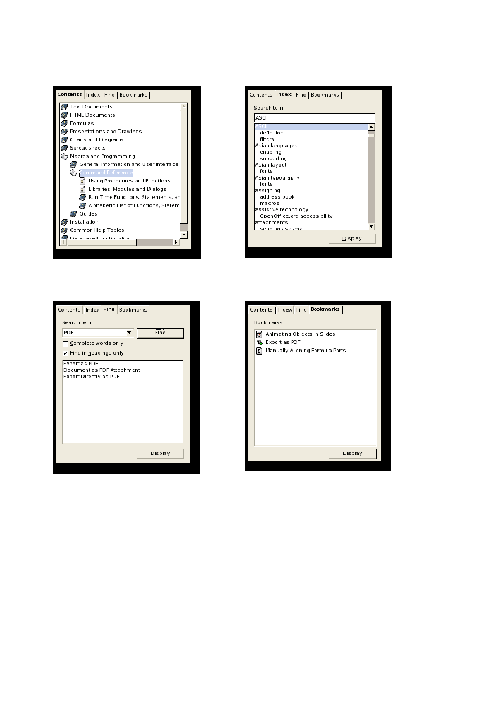
Fig. 1: List of contents
Fig. 2: Keyword Index
Fig. 3: Full Text Search
Fig. 4: Bookmarks
12
Installed Help Files
On installation, a
help
directory is created as child of the main OpenOffice.org
directory. It contains all global files (currently only
main_transform.xsl
), and one or
more subdirectories with language-dependent files. The language directories are
designated by ISO codes, for example,
en-US
for US-English. The contents of this
language directory are as follows:
Directory/File
Description
help/
The main help directory
help/main_transform.xsl
help/{lang}
The language dependent help files
help/{lang}/*.css
The cascading style sheets for displaying the help in the help
help/{lang}/err.html
The error file. This file is called whenever a help page can not be
found.
help/{lang}/shared.jar
The help file archive for shared help files
help/{lang}/shared.tree
help/{lang}/schart.jar
The help file archive for help files dealing with charts [1]
help/{lang}/schart.tree
The contents file for help files dealing with charts (see Help
help/{lang}/{module}.cfg
help/{lang}/{module}.db
help/{lang}/{module}.ht
help/{lang}/{module}.idx/
The full text search index for a help module
help/{lang}/{module}.jar
The help file archive for a help module
help/{lang}/{module}.key
help/{lang}/{module}.tree
Table 1: Help files that are installed.
Help Modules And Help Sections
The help is divided into different help modules that can be selected using the drop
down list at the top left of the help viewer. These correspond to the applications or
modules of OpenOffice.org.
1
This is a legacy remainder of an older StarOffice help structure.
13
Each help file (
*.xhp
) has a scope that consists of one or more help sections and
includes the corresponding help file archives
*.jar
. These archives contain all help
files of a help section. A help section does not correspond to an application of
OpenOffice.org.
In the help file viewer, the index and the full text search work within this scope only.
The distinction between help module and help section is confusing and will be eradicated in the
future. Basically, a help section contains all files that are found inside the
text/{section}
path
the help source module). Each help section produces a
*.jar
archive containing all help files in
that path. A help module takes one or more sections and combines them to form the scope of a
module.
Help module
Help Sections (Scope)
BASIC
sbasic + shared
Calc
scalc + shared + schart
Draw
sdraw + simpress + shared + schart
Impress
sdraw + simpress + shared + schart
Math
smath + shared
Writer
swriter + shared + schart
shared/explorer/database
Table 2:OpenOffice.org help modules and scopes
From the table above, it follows that the scope for the Writer help module includes all
help files from
swriter.jar
,
shared.jar
and
schart.jar
. Each help module has a
set of six files (
cfg
,
db
,
ht
,
jar
,
key
,
tree
) and an
*.idx
directory associated with it
except for Draw and Base, which have no
*.tree
Help Module Configuration Files
The
*.cfg
configuration files are ASCII files containing
parameter=value
pairs with
configuration information. They are created and maintained manually:
Title=%PRODUCTNAME Writer
Copyright=Copyright 2004, Sun Microsystems, Inc.
Language=en-US
Order=2
Start=text%2Fswriter%2Fmain0000.xhp
Heading=headingheading
Program=WRITER
07.07.04 00:00:00
2
This help section was introduced for version 2.0. For legacy reasons, all of its help files reside inside the
shared
directory tree.
3
For historical reasons, the contents for Draw are included in the
simpress.tree
file and the contents for Base (database) are included in
the
shared.tree
file.
14

·
Title
specifies the help module title as displayed in the drop down list at the top
left of the help viewer.
·
Copyright
is a copyright string.
·
Language
specifies the help language for the help module.
·
Order
was used in an earlier implementation and is deprecated.
·
Start
defines the start page for a help module. The slashes in the path name are
encoded as
%2F
. The start page must be contained in the archive that has the
same name as the configuration file (
swriter.jar
for
swriter.cfg
)
·
Heading
defines an internal value that is used by the full text search engine.
·
Program
specifies the application name that will be used for switching content
·
The last line contains the creation date. Use of this is deprecated. It is not
evaluated anywhere.
Help Module Contents Files (Section Archives)
The
*.jar
contents files contain the help topic files for a help section (see Help
contains all help
xhp
files. There is one archive per help section (sbasic, shared,
sdraw, simpress, scalc, schart, swriter, smath). Each help module comprises more
Help Module Lookup Tables (Databases)
The lookup tables
*.db
are Berkeley databases that contain a lookup table used by
the help application to find a help page to display for a given help ID. The tables are
used for referencing context sensitive help pages when help is called from the
application. They are not used for calling help files from within other help files. This is
designated by the parameter
UseDB=no
Calls on page 16). The data for that table come from the
bookmark
elements in the
Help Module Extended Tip Files
The files
*.ht
are Berkeley databases that contain the extended help tip text for all
Help IDs. The application uses these files to fetch the text for an extended tip for a
given Help ID.
The data for that table come from the
bookmark
elements in conjunction with the
ahelp
elements in the help files (see Bookmarks on page 95). It is extracted from the
help files at compile time.
15
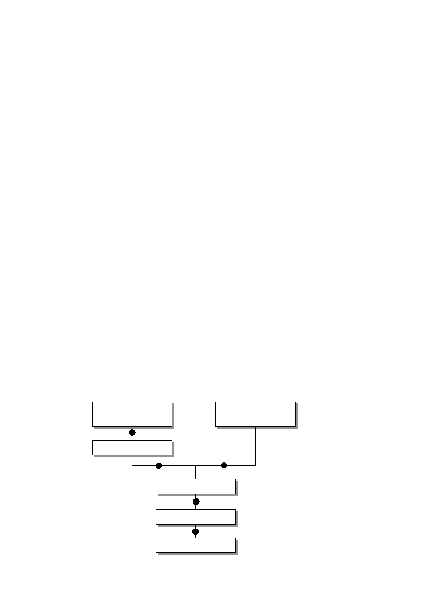
Help Module Index Files
The files
*.key
are Berkeley databases that contain the index entries for the help
modules.
The data for that table come from the
bookmark
elements in the help files (see
Bookmarks on page 95). It is extracted from the help files at compile time.
The Main Transformation Style Sheet
The file
main_transform.xsl
is global for all languages and help files and is used for
final transformation of the xhp help file to yield an html file that is displayed by the help
viewer component.
This style sheet is responsible for converting XML help elements and classes into
HTML elements and classes. The overall layout of the help file is specified using this
style sheet. The graphical appearance is controlled by the cascading style sheets (see
The Cascading Style Sheets
The cascading style sheets
*.css
describe the formatting style for the help page.
Since different locales require different fonts and font effects, the cascading style
sheets are language dependent. There is one set of style sheets per language.
The OpenOffice.org help viewer only recognizes some basic CSS2 commands. There
are five style sheets available, four of which account for special accessibility issues.
They are selected in the application using
Tools Options OpenOffice.org
General Help Formatting
.
Application Help Calls
This section briefly describes what happens when a help file is called from the
application or from within the help itself (links or embeddings).
16
Fig. 5: Help Calls
Application
(F1 or Help Button)
Help Viewer
$module.db
$module.jar
main_transform.xsl
Viewer
1
1
2
3
4
5
1. When
F1
or a
help
button is pressed in an OpenOffice.org application, a help
request is sent as an URL to the help content provider.
2. The help ID is resolved to a help file using the help lookup table for the
application (
$module.db
).
3. When a help file is called from within the help, the URL sent to the help
content provider contains the file path. There is no need for resolving the ID.
4. The help file is extracted from the corresponding help file archive
(
$module.jar
).
5. The extracted help file is transformed into HTML using the
main_transform.xsl
style sheet and sent to the help viewer for display. The
stylesheet
main_transform.xsl
controls all conversion from xhp to html, and
must be adjusted whenever new elements, attributes, or attribute values must
be taken into account.
The URLs sent to the help content provider have two forms:
URLs from the application
vnd.sun.star.help://swriter/12345?Language=en-US&System=UNIX
URLs send within the help:
vnd.sun.star.help://swriter/text/swriter/main0100.xhp?Language=en-
US&System=UNIX&UseDB=no&DbPAR=swriter
·
The protocol identifier
vnd.sun.star.help:
·
The help archive jar file to use:
swriter
·
The help ID to look up, or the name of the file to extract:
12345
or
swriter/text/swriter/main0100.xhp
·
A parameter for the current language:
Language=en-US
·
A parameter for the current operating system:
System=UNIX
·
A parameter to disable help ID lookup (only for help internal URLs):
UseDB=no
·
A parameter to describe the current help context (module):
DbPAR=swriter
17
Structure of the CVS Help Module
The help source files and all helper files are located in the CVS module
helpcontent2
. The directory layout is as follows:
Directory
Content
helpcontent2/
The module's main directory
helpcontent2/helpers
Files that are not used by the help content itself, like
the DTD for the XML help format.
helpcontent2/helpers/helpauthoring
The help authoring environment for OpenOffice.org,
helpcontent2/source
The help source files that are used to build the help.
helpcontent2/source/auxiliary
Auxiliary files that do not contain help content but are
still needed for building the help, style sheets,
helpcontent2/source/text
The help content source files, the makefiles for the
help compiler, and the localized content. Every
subdirectory contains its own makefile and a file with
all localized content.
helpcontent2/source/text/sbasic
Help files specific to BASIC (and the IDE).[4]
helpcontent2/source/text/scalc
Help files specific to the Calc module.[4]
helpcontent2/source/text/schart
Help files specific to charts.[4]
helpcontent2/source/text/sdraw
Help files specific to the Draw module.[4]
helpcontent2/source/text/shared
Help files common to two or more modules.[4]
helpcontent2/source/text/simpress
Help files specific to the Impress module.[4]
helpcontent2/source/text/smath
Help files specific to the Math module.[4]
helpcontent2/source/text/swriter
Help files specific to the Writer module.[4]
helpcontent2/prj
The build lists.
helpcontent2/util
Table 3: Structure of the Help CVS module
Note that the help images are no longer part of the CVS module. Starting with OpenOffice.org 2.0,
application icons are directly taken from the
images.zip
repository in the
share/config
directory.
Images specific to the help need to be added to the CVS
default_images
module in the
helpimg
subdirectory. These will then also be included in the
images.zip
archive.
4
The subdirectory structure of this directory has historical reasons.
18

Building the Help Set
Setting Up A Build Environment
This is described on
tools.openoffice.org
.
Makefiles For The Help
The
helpcontent2
module contains three types of makefiles:
1. Makefiles for compiling the help source files
These makefiles are found in the
helpcontent2/source/text
directories.
Every subdirectory that contains help files to be compiled has a
corresponding makefile, for example (shortened for clarity):
#***************************************************************
#***************************************************************
# edit to match directory level
PRJ = ..$/..$/..$/..
# same for all makefiles in "helpcontent2"
PRJNAME = helpcontent2
# edit to match the current package
PACKAGE = text/sbasic/guide
# uniqe name (module wide);
# using a modified forme of package should do here
TARGET = text_sbasic_guide
# edit to match the current module
MODULE = sbasic
# --- Settings ------------------------------------------------
.INCLUDE : settings.mk
.INCLUDE : $(PRJ)$/settings.pmk
# this list matches the *.xhp files to process
HZIPFILES = \
control_properties.hzip \
create_dialog.hzip \
insert_control.hzip \
sample_code.hzip \
show_dialog.hzip
# --- Targets -------------------------------------------------
.INCLUDE : target.mk
.INCLUDE : $(PRJ)$/makefile.pmk
You find a template for this makefile in
helpcontent2/helpers
. This
template is used when the makefiles are created using the
createmakefile.pl
script in
helpcontent2/helpers
. Use this script for
makefile creation and don't modify the makefiles manually.
19

2. Makefiles for linking the compiled files.
These makefiles are found in the subdirectories of
helpcontent2/util
(the
directory itself contains the third type of makefile), for example (shortened for
clarity):
#**************************************************************
#**************************************************************
# edit to match directory level
PRJ = ..$/..
# same for all makefiles in "helpcontent2"
PRJNAME = helpcontent2
# uniqe name (module wide);
# using a modified forme of package should do here
TARGET = util_sbasic
# --- Settings ------------------------------------------------
.INCLUDE : settings.mk
.INCLUDE : $(PRJ)$/settings.pmk
.IF "$(SOLAR_JAVA)"!=""
common_build_zip:=
zip1generatedlangs=TRUE
zip1langdirs=$(aux_alllangiso)
ZIP1TARGET=xhp_sbasic
ZIP1FLAGS= -u -r
ZIP1DIR=$(MISC)$/$(LANGDIR)
ZIP1LIST=$(LANGDIR)$/text$/sbasic$/* -x "*.dphh*" \
-x "*.hzip" -x "*.created"
.ENDIF
# "$(SOLAR_JAVA)"!=""
LINKNAME=sbasic
LINKADDEDFILES= \
-add sbasic.cfg
$(PRJ)$/source$/auxiliary$/LANGUAGE$/sbasic.cfg \
-add sbasic.tree
$(PRJ)$/source$/auxiliary$/LANGUAGE$/sbasic.tree \
-add sbasic.jar $(BIN)$/xhp_sbasic_LANGUAGE.zip
LINKADDEDDEPS= \
$(PRJ)$/source$/auxiliary$/LANGUAGE$/sbasic.cfg \
$(PRJ)$/source$/auxiliary$/LANGUAGE$/sbasic.tree \
$(BIN)$/xhp_sbasic_LANGUAGE.zip
LINKLINKFILES= \
text$/sbasic$/guide$/control_properties.hzip \
text$/sbasic$/guide$/create_dialog.hzip \
text$/sbasic$/guide$/insert_control.hzip \
text$/sbasic$/guide$/sample_code.hzip \
text$/sbasic$/guide$/show_dialog.hzip \
# --- Targets -------------------------------------------------
20
.INCLUDE : target.mk
.INCLUDE : $(PRJ)$/util$/target.pmk
You find a template for this makefile in
helpcontent2/helpers
. This
template is used when the makefiles are created using the
createmakefile.pl
script in
helpcontent2/helpers
. Use this script for
makefile creation and not to modify the makefiles manually.
3. A makefile for creating the stylesheet archive in
helpcontent2/util
(shortened for clarity):
#**************************************************************
#**************************************************************
# edit to match directory level
PRJ = ..
# same for all makefiles in "helpcontent2"
PRJNAME = helpcontent2
# uniqe name (module wide);
# using a modified forme of package should do here
TARGET = plain_util
# --- Settings ------------------------------------------------
.INCLUDE : settings.mk
.INCLUDE : $(PRJ)$/settings.pmk
ZIP1TARGET=helpxsl
ZIP1FLAGS= -u -r
ZIP1DIR=$(PRJ)$/source$/auxiliary
ZIP1LIST=main_transform*.xsl
# --- Targets -------------------------------------------------
.INCLUDE : target.mk
ALLTAR : $(COMMONBIN)$/helpimg.ilst
$(COMMONBIN)$/helpimg.ilst: helpimg.ilst
$(COPY) $< $@
Help Build Process
The file
helpconten2/prj/build.lst
defines which directories are built using a
directory's makefile. Dependencies (which directories need to be built first) are also
Initiate a help build by issuing the command
build
while in the
helpcontent2
directory.
5
More information about the build process for OpenOffice.org in general can be found on
,
, or on
21

1. The help files from
helpcontent2/source/text
are compiled and written to the
misc
subdirectory of the platform directory of the output tree. This step produces
a set of
*.hzip
files and dependency files
*.dphh
. These files are the particles
that are used to create the help modules in the next the linking step.
2. The compiled help files are taken from the
misc
directory and linked into a zip
archive. Other files are added from the
helpcontent2/source/auxiliary
directory to that archive as defined in the makefiles of the subdirectories in
helpcontent2/util
. This results in one zip archive per help module and
language in the
bin
subdirectory of the platform directory of the output tree.
3. The
helpxsl.zip
archive is built according to the makefile in
helpcontent2/util
.
4. All archive files are delivered according to the
d.lst
file in
helpcontent2/prj
Adding A Help File To Or Removing A Help File From The Set Of Help Files
The makefiles need to be adjusted to reflect the changes you made to the set of files.
If you added a new file, add this to the makefile of its directory and to the link makefile
(in
helpcontent2/util/*
) of any module that will contain the file. If you deleted a
help file, remove it from the makefile of its directory and from the link makefile (in
helpcontent2/util/*
) of any module that contains the file.
The safest way is to run the create_makefiles.pl script from helpcontent2/helpers to update the
makefiles.
If you rebuild the help after help files have been deleted, or after dependencies
(references) between the files have been changed, you need to remove all
dependency files from the
misc
directory that are no longer valid. To be perfectly safe,
you can remove the complete output tree for the platform of the
helpcontent2
module.
Help Images
Images that are used inside the help are stored in different modules and accessed by
the help viewer using the
images.zip
archive on runtime. Therefore, you need to add
help images, such as screenshots, to the
helpimg
directory of the
default_images
module. Including the help images to the
images.zip
repository is controlled by the
helpimg.ilst
file that is found in the
util
directory of
helpcontent2
.
The
helpimg.ilst
file contains all image files to be included for
helpcontent2
, one
file per line. The variable
%GLOBALRES%
is used to designate the default image
directory:
%GLOBALRES%/helpimg/calcein.png
Don't forget the localized files in the subdirectories.
22
2 Help File XML format Basics
Basic Document Structure
The basic structure of a valid help file for OpenOffice.org consists of a
helpdocument
root
element with one
meta
and one
body
sub-element containing the content (
body
)
and meta information (
meta
). The minimum information is a topic title and the filename
inside the elements
·
/helpdocument/meta/topic/title
and
·
/helpdocument/meta/topic/filename
<?xml version="1.0" encoding="UTF-8"?>
<helpdocument version="1.0">
<meta>
<topic id="someid" indexer="include" status="PUBLISH">
<title xml-lang="en-US" id="tit">Topic Title</title>
<filename>text/swriter/01/012345.xhp</filename>
</topic>
</meta>
<body>
</body>
</helpdocument>
The help file extension is
xhp
.
Using Variables
In the help files the following variables are used to designate the name and the
version of the product. This is to allow for correct branding of the product (for
example, OpenOffice.org vs. StarOffice). You must never use the literal name of the
product but instead one of the following variables[6]:
6
In addition to these variables, the following two variables are still used in the help files for legacy reasons but deprecated:
$[officename]
and
$[officeversion]
.
23
·
%PRODUCTNAME
designates the name of the product, for example
OpenOffice.org.
·
%PRODUCTVERSION
designates the current version of the product, for example
2.0.
Both variables are replaced by the main transformation style sheet
main_transform.xsl
(see page 16) when the help is displayed. The corresponding
information is taken from the application's configuration information and passed to the
Paragraph Roles
The main element for help content is a
paragraph
. There is no heading element,
instead all headings are treated as paragraphs with a heading role. The
role
attribute
defines the role of a paragraph with the
paragraph
role being the standard. The
values for the role attribute are not defined in the DTD.
During the conversion process (XML
HTML) the
role
attribute is mapped to a
class
attribute of the corresponding HTML element allowing to influence the layout of the
corresponding paragraph using cascading style sheets.[7]
The following roles are currently suggested and defined in the help authoring
Role
Description
Converts to...
paragraph
A standard paragraph
<p class="paragraph">...
</p>
heading
A heading
If this role is assigned to a paragraph, the
heading level has to be specified using
the level attribute of the paragraph
element.
<h1>...</h1>
to
<h6>...</h6>
note
A note
<p class="note">...</p>
warning
A warning
<p class="warning">...</p>
tip
A tip
<p class="tip">...</p>
code
A code fragment
<p class="code">...</p>
example
An example
<p class="example"> ...</p>
tablehead
A table head (first rows)
<p class="tablehead">
...</p>
tablecontent
Table contents
<p class="tablecontent">
...</p>
Table 4: Paragraph Roles
7
Be advised that the help viewer component does not support all of CSS2.
24
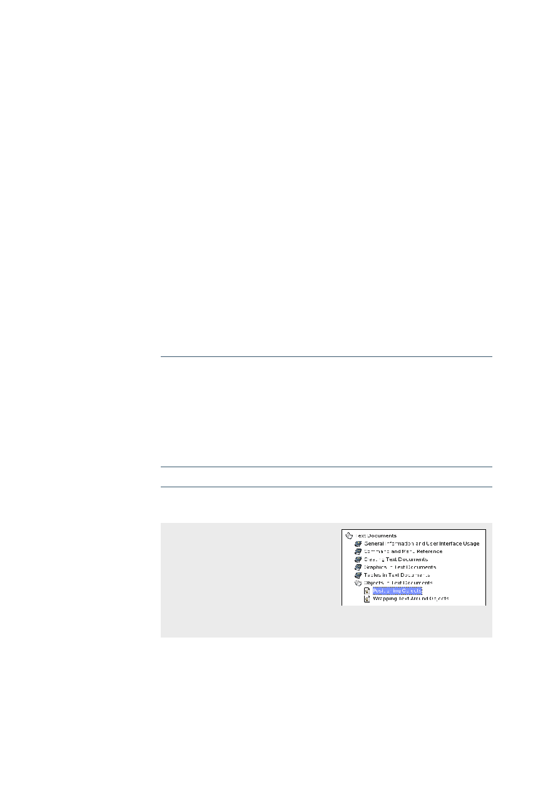
If you use other roles, you must ensure that they are taken into account by the CSS
files that define the help file display format.
Defining Index, Contents, and Context Sensitivity
The help uses one unified bookmarking system to set anchors inside the help files
which are used by the
Index
tab, the
Contents
tab and for context-sensitive help.
The main element is the
bookmark
element. A bookmark has a
branch
attribute
representing the purpose of the bookmark. Currently there are three branches
defined:
contents
,
index
, and
hid
.
To define an anchor for a bookmark inside a help document, the element
<bookmark>
has to be positioned at the place the bookmark will point to. The
branch
attribute
specifies the type of bookmark to be defined (a content entry, an index entry, or a help
ID), while the sub-element
bookmark_value
contains the visible bookmark text, if
applicable.
The only child element that is allowed inside the
bookmark_value
is
embedvar
to allow
embedding of commonly used titles for content nodes or index entries. For examples of using
embedded fragments inside bookmark values, refer to the next sections.
Contents Branch
Content entries are displayed on the Content tab page of the help viewer. The
branch
attribute takes the value
contents
. The bookmark value can contain any number of
levels separated by slashes, with the last part of the bookmark value serving as the
entry and the other parts serving as nodes.
Note that currently the contents branch is not implemented in the help build process.
Example
<bookmark branch="contents"
xml-lang="en-US" id="bm1">
<bookmark_value>
Text Documents/
Objects in Text Documents/
Positioning Objects
</bookmark_value>
</bookmark>
A bookmark value can also contain embedded fragments for node titles. This reduces
redundancy, maintenance effort, and the risk of introducing errors through typos. This
can be avoided if the top level entries for the content tree are defined separately:
25
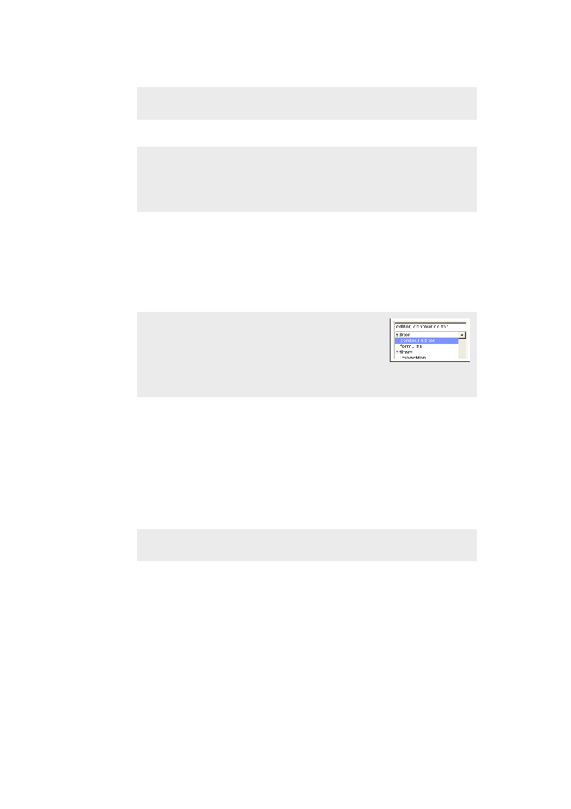
<variable id="textdocs">Text Documents</variable>
<variable id="objtextdocs">Objects in Text Documents</variable>
and embedded as text fragments:
<bookmark_value>
<embedvar href="/text/shared/00/variables.xhp#textdocs"/>/
<embedvar href="/text/shared/00/variables.xhp#objtextdocs"/>/
...
</bookmark>
Index Branch
Index Entries are displayed on the Index tab page of the help viewer. The
branch
attribute takes the value
index
Currently, index entries can contain two levels
separated by a semicolon.
Example
<bookmark branch="index" id="bm1" xml-lang="en-US">
<bookmark_value>
editor;contour editor
</bookmark_value>
</bookmark>
As with content entries, the bookmark values for index entries can contain embedded
text fragments by using the
embedvar
element, which can be useful if names of UI
elements are used that are subject to change.
"hid" Branch
Help IDs are never displayed but instead trigger context-sensitive help inside
OpenOffice.org. The
branch
attribute takes the value
hid
and in addition contains the
help ID associated with the bookmark.
<bookmark id="bm_9876" xml-lang="en-US"
branch="hid/HID_SOME_HELP_ID"/>
A bookmark for a given help ID can only be used once inside the help files since the
bookmark defines the entry point for the help viewer when context-sensitive help is
triggered from the UI either through the use of the
F1
key or the
Help
button.
There are two types of help IDs currently used in the help files:
·
Symbolic names, like
SID_FM_CONVERTTO_IMAGECONTROL
·
UNO command names, like
.uno:InsertCtrl
26
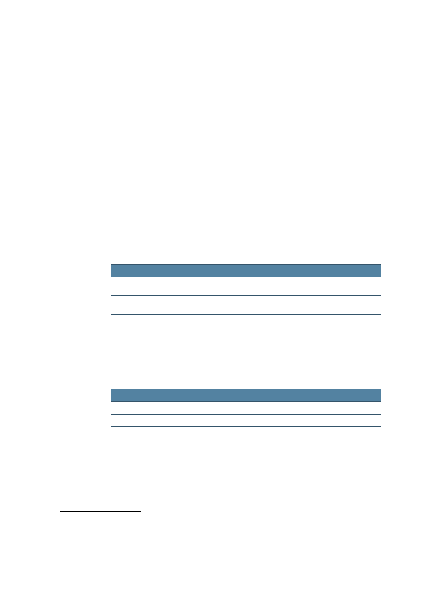
Switching Content
In some cases it is necessary to distinguish between different platforms or
applications when displaying the help. For example, on one platform a key stroke to
achieve a certain action can differ from the key stroke used on other platforms. To
avoid duplicating large amounts of text and to reduce redundancy, switching elements
are available, which are used to select the correct portion of the content at runtime.
The help content provider sends additional information along with a help request that
states the current platform, language and application context. This information can be
evaluated using the switch constructs to display the corresponding information.
There are two types of content switching:
·
Switching complete paragraphs or sections
·
Switching text fragments inside paragraphs
Currently, the following values are used for the select attribute of a
switch
and
switchinline
element to specify the switching context:
Value
Switching context
Example/Comment
sys
Operating System
Switching content for Unix, Windows, or Mac
platforms.
appl
Application
Switching content for different OpenOffice.org applications (Writer,
Calc,...) in files that are common to multiple applications.
distrib
Switching content for different distributions, like OpenOffice.org
and StarOffice, which contains extra commercial features.
Table 5: Paragraph Switching Contexts
The following values are used for the select attribute of a
case
and
caseinline
element within a given switching context:
Switching Context
Values
Operating System (sys)
WIN UNIX MAC
Application (appl)
WRITER CALC DRAW IMPRESS MATH BASIC CHART
Table 6: Inline Switching Contexts
Switching Complete Paragraphs Or Sections
This type is used, for example, if contents of a paragraph differ considerably on
different platforms or for different applications, or if a certain paragraph or section is
only applicable to a certain platform or application.
8
Note, that this switch is currently not evaluated in the main transformation step, since the help content provider does not provide the
necessary information. Currently, the main transformation style sheet uses the value of the product name to distinguish between open source
and commercial distributions, but this is only implemented for StarOffice and OpenOffice.org.
27

For example, while mounting a CD-ROM drive can be a necessary step on a Unix
system, it is usually not applicable on Windows computers. The
switch
element can
be used to accomplish this distinction:
<switch select="sys">
<case select="UNIX">
<paragraph>Mount the cd rom drive.</paragraph>
</case>
</switch>
Switching Text Fragments Inside Paragraphs
This type is used if only small text fragments differ on different platforms or
applications. A typical case is the use of shortcuts on different systems, or the
notation of file paths on different platforms.
For example, while on Windows the standard installation path for OpenOffice.org
could be something like
C:\Program Files\OpenOffice.org-2.0
, it could be
~/OpenOffice.org-2.0
on a Unix system, making it necessary to distinguish
between the operating environments when talking about these paths. The
switchinline
element can be used to accomplish the distinction:
<paragraph>The software will be installed in the
<switchinline select="sys">
<caseinline select="UNIX">
~/OpenOffice.org-2.0
</caseinline>
<caseinline select="WIN">
C:\Program Files\OpenOffice.org-2.0
</caseinline>
<defaultinline>
home
</defaultinline>
</switchinline>
directory.</paragraph>
In the code example above, there is also a default value defined by using the optional
defaultinline
element, which is shown if neither
UNIX
nor
WIN
is set as the platform
value when calling the help.
Embedding Content
You can also reduce redundant content by defining reusable text fragments and
blocks, which can be referenced from other places. The references are resolved at
runtime when the help is displayed, and are temporarily resolved at compile time
when the full text search index is generated.
There are two ways of reusing content by means of embedding:
·
Embedding complete sections
·
Embedding text fragments
28

Embedding Complete Sections
Single or multiple paragraphs can apply to more than one help file. For example,
standard steps inside procedures can be written once and embedded in multiple
places, reducing maintenance and translation effort.
The URL for the reference takes the form
file#id
. If, for instance, the section with
the ID
12345
from the file
text/writer/01/012345.xhp
is to be embedded, the URL
would be
text/swriter/01/012345.xhp#12345
. The file name refers to the path and
name that is stored in the jar files.
Complete sections can be embedded using the
embed
element. The section to be
embedded is referenced using the attribute
ID
, which must be unique within the file.
If, for example, multiple processes described in the help involve logging on to a
computer, this particular step can be written once and embedded wherever required:
Example
Original location (filename:
original.xhp
):
<section id="logon">
<paragraph id="par_id12345" role="paragraph" xml-lang="en-US">
Log on to your computer using your user name and password.
</paragraph>
</section>
Referenced location:
<paragraph id="par_id9876" role="heading" level="1" xml-lang="en-US">
Starting %PRODUCTNAME
</paragraph>
<list>
<listitem><embed href="original.xhp#logon"/></listitem>
<listitem>
<paragraph id="par_id9877" role="paragraph" xml-lang="en-US">
Start %PRODUCTNAME</paragraph>
</listitem>
</list>
This results in the following:
Starting OpenOffice.org
1. Log on to your computer using your user name and your password.
2. Start OpenOffice.org
Embedding Text Fragments
Text fragments can, for example, represent commonly used phrases or names of UI
elements. These can be specified once and used in multiple places, reducing
maintenance and localization effort.
29

The URL for the reference takes the form
file#id
. If, for instance, the
variable
with
the ID
12345
from the file
text/swriter/01/012345.xhp
is to be embedded, the
URL would be
text/writer/01/012345.xhp#12345
. The file name refers to the path
+ name that is stored in the jar files.
These fragments can be embedded using the
embedvar
element if they are previously
defined as being
variable
s, so that they can be referenced. The text fragment to be
embedded is placed inside a
variable
element and assigned a unique ID using the
element's
id
attribute:
Original location (filename:
original.xhp
):
<paragraph id="par_id1234">Press the <variable id="btn_prnprev"><item
type="button">Print Preview</item></variable> button.</paragraph>
The fragment can then be referenced in other locations using the embedvar element:
Referenced location:
<paragraph id="par_id9876">A preview can be shown using the <embedvar
href="original.xhp#btn_prnprev"/> button.
Result:
A preview can be shown using the Print Preview button.
If, for example, the name of the button changes from "Print Preview" to "Show
Preview" you only need to update one location to make the change available in all
referenced locations.
You can also embed the content of paragraphs by referring to the paragraph ID. Note
that only the contents of the paragraph are embedded. The paragraph formatting
information is disregarded:
Referenced location
<paragraph id="par_id433122"><embedvar
id="referenced.xhp#par_id9876"/>
Result:
A preview can be shown using the Print Preview button.
Images and Icons
All images must be placed inside
paragraph
s. The
image
element contains
information about the image source in the
src
element and must be assigned a
unique
ID
. Every
image
element must also contain a child element
alt
that contains a
short description of the image used if the visual content is not displayed or cannot be
accessed by visually impaired users.
30

In addition to the
alt
element, there is also an optional
caption
element that can take
a long description as an image caption.
Starting with OpenOffice.org 2.0, the help retrieves all images from the central image
repository
images.zip,
which is available in the
share/config
directory of the
OpenOffice.org installation. This archive contains all images that OpenOffice.org
uses, separated by modules. The OpenOffice.org Help fetches any icons displayed in
the help files from here. Since this also is the place where the application fetched the
icons to display in the user interface, the icons in the help will always be in sync with
the application, even if the
images.zip
archive contains a customized set of images.
The help itself also has a subdirectory inside the
images.zip
archive that contains all
images that are specific to the help and only used by it, for instance screen captures.
These images are stored under
res/helpimg
in the archive.
Localization Information
Content that is to be localized is found inside elements with the
xml-lang
attribute
that contains the elements language code. Elements can be excluded from
localization by specifying the
localize
attribute and setting it to
false
. Any such
element and all of its child elements will be excluded from the localization process.
Note that the help does not as yet support the pseudo-language
x-comment
as value for
xml-
lang
to designate comments.
All paragraphs contain an
l10n
attribute, which is used to specify the localization
status of the paragraph. This attribute was only used in the migration phase and is not
evaluated. It can be used to store a paragraph authoring status to implement basic
content management functionality.
Auxiliary Files
Some auxiliary files are necessary, apart from the help files
*.xhp
to build the help
set. These are found in the
source/auxiliary
directory of the
helpcontent2
module. Some of them are just used for building the help, and some are included in
the helpset.
Files Used For Building The Help
Apart from the makefile for this directory
makefile.mk
, there are a number of XSL
stylesheets used for help compilation:
·
default.xsl
31

·
embed.xsl
is used for resolving embedded sections in help files during
compile time to correctly process embedded sections when creating keyword
and fulltext search index
·
index.xsl
is used by the corresponding JAVA routine for creating the full text
search index
Main Transformation Stylesheet
The main transformation stylesheet
main_transform.xsl
controls the last
transformation step of the XML files to HTML before they are displayed in the help
viewer. The file contains instructions on how to transform elements of the XML files to
HTML elements to be displayed. It also takes care of some formatting issues, and is
responsible for replacing variables used in the help files.
The help content provider passes some parameters to the stylesheet that are used for
file processing:
·
Database
this parameter identifies the help module context (see also Help
swriter
,
scalc
,
sdraw
,
simpress
,
schart
,
sbasic
,
smath
. This value is
·
System
this parameter identifies the operating system/platform. This value is
·
productname
and
productversion
these parameters contain the name and
version string of the product (e.g. "OpenOffice.org" "2.0", or "StarOffice" "8").
These are used to replace the variables
%PRODUCTNAME
and
%PRODUCTVERSION
·
imgrepos
this parameter contains the physical path to the image repository
images.zip
used for requesting the images in the help files.
·
Id
this parameter contains the help ID called. It is displayed in the error
message when the corresponding help file cannot be found.
·
Language
this parameter contains the current locale of the program.
Contents Definition Files *.tree
A number of *.tree files contain the information used to display the table of contents
on the contents tab of the help viewer. These are XML files based on the following
simple DTD:
<!ELEMENT tree_view (help_section)+>
<!ATTLIST tree_view
version CDATA #REQUIRED
>
<!ELEMENT help_section (node|topic)*>
<!ATTLIST help_section
32

application CDATA #REQUIRED
id CDATA #REQUIRED
title CDATA #REQUIRED
>
<!ELEMENT node (topic)*>
<!ATTLIST node
id CDATA #REQUIRED
title CDATA #REQUIRED
>
<!ELEMENT topic (#PCDATA)>
<!ATTLIST topic
id CDATA #REQUIRED
>
The main element
tree_view
encapsulates one or more
help_section
s that contain
one or more
node
s with one or more
topic
s (or further
sub
node
s
). The
help_section
s are the top-most element in the table of contents as displayed by the
help viewer. Below that, there are nodes, represented by "book" icons in the help
viewer and, finally, topics that can be selected. A node can have sub-nodes.
33


3 Help File XML Reference
This chapter lists all elements of the XML help file DTD in alphabetical order as
presented in the Document Type Definition in the Appendix.
The element sections presented here all share a common structure. The name of the
element serves as a heading and is followed by element details:
·
Element Description and Purpose
·
Attributes
·
Parent Elements
·
Child Elements
·
Element Definition
·
Element Example
Examples for elements can show an element within its parent or child context.
Common Attributes
The following attributes are common to several elements.
Xml-Lang
The
xml-lang
attribute designates elements that need localization. The localization
process identifies elements to be localized by this attribute. It contains the language of
the element it belongs to as a combination of language ISO code (ISO 639-1) and
country ISO code (ISO 3166), separated by a dash.
xml-lang="en-US"
All elements containing text to be translated have an
xml-lang
attribute:
alt
,
bookmark
,
caption
,
paragraph
, and
title
.
You can use the
comment
element to insert comments into the help file. But if they are
outside an element that will be localized they will not be recognized by the localizers.
35

Localize
The
localize
attribute can only take the value
false
and designates elements that
are excluded from the localization process. If an element contains the localize
attribute set to
false,
its contents and the contents of all child elements should not
be translated.[9] If the attribute contains any other value than
false
it will be ignored.
The attribute is optional.
localize="false"
All elements containing text to be translated or subelements with text to be translated
have an optional
localize
attribute:
alt
,
body
,
bookmark
,
bookmark_value
,
caption
,
list
,
listitem
,
paragraph
,
section
,
switch
,
table
,
tablecell
,
tablerow
, and
title
.
Id
The
id
element contains a unique string used to identify the element for localization
and referencing purposes. The ID must be unique within a help file so that referencing
across files and relocating sections and paragraphs across files is possible.
id="some_unique_value"
All elements that can be embedded or have to be translated contain a mandatory
id
attribute:
image
,
bookmark
,
paragraph
,
section
,
table
,
title
,
topic
, and
variable
.
Valid characters for the
id
value are capital or small letters from a-z, numbers from 0-
9, and the underscore, in any combination. Other characters are not allowed.[10]
9
They are automatically excluded in the Sun release engineering localization process.
10 For legacy reasons, the help files contain many IDs that are not valid XML "id" types. Therefore, the id attribute is defined in the DTD to be of
the type
CDATA
.
36
Help File (*.xhp) Elements
Ahelp
This element designates text that is to be used as extended tips (for instance, tool tips
or active help). It can contain text (
PCDATA
) and child elements. It can only be used as
a child of a
paragraph
.
Attributes
Attribute
Required
Contents
Values allowed
Description
hid
yes
CDATA
The symbolic help ID for which
the content is to be displayed.
visibility
no
fixed value
"hidden", "visible"
The visibility of the ahelp content
inside the help viewer. If set to
"hidden" the content is only
visible in the extended tips popup.
Table 7: Attributes of the ahelp Element
Parent Elements
caseinline
,
defaultinline
,
paragraph
,
variable
Child Elements
comment
,
embedvar
,
br
,
emph
,
item
,
link
,
variable
Element Definition
<!ELEMENT ahelp (#PCDATA | embedvar | br | comment | emph | item |
link | switchinline | variable)*>
<!ATTLIST ahelp
hid CDATA #REQUIRED
visibility (hidden | visible) #IMPLIED
>
Example
<ahelp hid="HID_SOME_HID" visibility="hidden">
You will only see this text in the extended tips for the ui control
with the help id HID_SOME_HID.
</ahelp>
37
Alt
This element is used to specify an alternative text for an image. It corresponds to the
HTML attribute of the same name and can only contain PCDATA that is localized (no
markup).
Attributes
Attribute
Required
Contents
Values allowed
Description
xml-lang
yes
CDATA
id
yes
CDATA
A unique ID to identify the
localize
no
fixed value
"false"
Table 8: Attributes of the alt element
Parent Elements
image
Child Elements
none
Element Definition
<!ELEMENT alt (#PCDATA)>
<!ATTLIST alt
xml-lang CDATA #REQUIRED
id CDATA #REQUIRED
localize CDATA #IMPLIED
>
Example
<image src="img/imagefile.png" id="img_id1235">
<alt xml-lang="en-US" id="alt_id1235">Dialog File Open</alt>
</image>
Body
This element contains all help content information. It cannot itself contain any
PCDATA, but rather only child elements.
Attributes
Attribute
Required
Contents
Values allowed
Description
localize
no
fixed value
"false"
Table 9: Attributes of the body element
38
Parent Elements
helpdocument
Child Elements
section
,
paragraph
,
table
,
comment
,
bookmark
,
switch
,
embed
,
list
,
sort
Element Definition
<!ELEMENT body (section | paragraph | table | comment | bookmark |
switch | embed | list | sort)*>
<!ATTLIST body
localize CDATA #IMPLIED
>
Example
<body>
<paragraph>This is the content of a help file</paragraph>
</body>
Bookmark
This element contains information about a bookmark used in the help files. The
bookmark type is specified inside the
branch
attribute of the
bookmark
element while the
bookmark value is defined in the child element
bookmark_value
. For more information
Attributes
Attribute
Required
Contents
Values allowed
Description
branch
yes
CDATA
"contents",
"index",
"hid"
The bookmark type specified by the
branch inside the unified bookmarks
id
yes
CDATA
A unique ID to identify the element, see
xml-lang
yes
CDATA
localize
no
fixed value
"false"
Table 10: Attributes of the bookmark element
Parent Elements
body
,
case
,
default
,
section
,
topic
,
tablecell
,
listitem
Child Elements
bookmark_value
39
Element Definition
<!ELEMENT bookmark (bookmark_value)*>
<!ATTLIST bookmark
branch CDATA #REQUIRED
xml-lang CDATA #REQUIRED
id CDATA #REQUIRED
localize CDATA #IMPLIED
>
Example
<bookmark branch="contents" xml-lang="en-US" id="bm_id1234">
<bookmark_value>
StarOffice Writer Help/Working with Fields/Editing Field Contents
</bookmark_value>
</bookmark>
<bookmark branch="index" xml-lang="en-US" id="bm_id9876">
<bookmark_value>
Formulas/Exporting
</bookmark_value>
</bookmark>
<bookmark branch="hid/12345"/>
Bookmark_value
Parent Elements
bookmark
Child Elements
embedvar
Element Definition
<!ELEMENT bookmark_value (#PCDATA | embedvar)*>
Example
<bookmark branch="contents" xml-lang="en-US" id="bm_123">
<bookmark_value>
StarOffice Writer Help/Working with Fields/Editing Field Contents
</bookmark_value>
</bookmark>
<bookmark branch="index/scalc" xml-lang="en-US" id="bm_543">
<bookmark_value>
Formulas/Exporting
</bookmark_value>
</bookmark>
<bookmark branch="index/scalc" xml-lang="de-DE" id="bm_543">
<bookmark_value>
Formeln/Exportieren
</bookmark_value>
</bookmark>
40
Br
This element can be used to place a manual line break. It works like the
corresponding HTML <br> element. The element itself is empty.
Parent Elements
ahelp
,
caption
,
caseinline
,
defaultinline
,
paragraph
,
variable
Child Elements
none
Element Definition
<!ELEMENT br EMPTY>
Example
<paragraph>This line must have a<br/>manual<br/>line
break.</paragraph>
Caption
This element specifies the (optional) caption of an image or a table.
Attributes
Attribute
Required
Contents
Values allowed
Description
xml-lang
yes
CDATA
id
yes
CDATA
A unique ID to identify the
localize
no
fixed value
"false"
Table 11: Attributes of the caption element
Parent Elements
image
,
table
Child Elements
embedvar
,
br
,
emph
,
item
,
link
,
switchinline
,
variable
Element Definition
<!ELEMENT caption (#PCDATA | embedvar | br | emph | item | link |
switchinline | variable)*>
<!ATTLIST caption
xml-lang CDATA #REQUIRED
id CDATA #REQUIRED
localize CDATA #IMPLIED
>
41
Example
<table>
<caption xml-lang="en-US" id="cp_1234">
List of all <item type="productname">StarOffice</item> slots.
</caption>
</table>
Case
This elements holds the cases of a
switch
statement.
Attributes
Attribute
Required
Contents
Values allowed
Description
select
yes
CDATA
Contains the value that is to be
on page 27 for more information.
Table 12: Attributes of the case element
Parent Elements
switch
Child Elements
paragraph
,
table
,
comment
,
bookmark
,
embed
,
list
,
switch
,
section
Element Definition
<!ELEMENT case (paragraph | table | comment | bookmark | embed |
link | list | switch | section)*>
<!ATTLIST case
select CDATA #REQUIRED
>
Example
<switch select="sys">
<case select="WIN">
<paragraph>This appears in Windows.</paragraph>
</case>
<case select="UNIX">
<paragraph>This appears in Unix.</paragraph>
</case>
<default>
<paragraph>This appears in all other cases</paragraph>
</default>
</switch>
42
Caseinline
This element holds the cases for an
switchinline
statement.
Attributes
Attribute
Required
Contents
Values allowed
Description
select
yes
CDATA
Contains the value that is to be
Table 13: Attributes of the caseinline element
Parent Elements
switchinline
Child Elements
image
,
embedvar
,
br
,
emph
,
item
,
link
,
switchinline
,
variable
,
ahelp
,
object
Element Definition
<!ELEMENT caseinline (#PCDATA | image | embedvar | br | emph |
item | link | switchinline | variable |
ahelp | object)*>
<!ATTLIST caseinline
select CDATA #REQUIRED
>
Example
<paragraph>Press the
<switchinline select="sys">
<caseinline select="WIN">Ctrl</caseinline>
<caseinline select="MAC">Apple</caseinline>
<defaultinline>any</defaultinline>
</switchinline>
key to start.
</paragraph>
Comment
This element is used for inserting comments into the help files used by the
author/editor/translator. They are to be removed when the help files are compiled.
Attributes
none
Parent Elements
body
,
case
,
default
,
list
,
listitem
,
section
,
switch
,
tablecell
43
Child Elements
none
Element Definition
<!ELEMENT comment (#PCDATA)>
Example
<section>
<comment>FPE: This section is in a draft state!</comment>
</section>
Created
This element holds the date of document creation and additional information (author
or comment).
Attributes
Attribute
Required
Contents
Values allowed
Description
date
yes
CDATA
Contains the date of document
creation in the format
YYYY-MM-DDThh:mm:ss
where:
YYYY
= four-digit year
MM
= two-digit month
DD
= two-digit day of month
hh
= two digits of 24 hour
mm
= two digits of minute
ss
= two digits of second
Table 14: Attributes of the created element
Parent Elements
history
Child Elements
none
Element Definition
<!ELEMENT created (#PCDATA)>
<!ATTLIST created
date CDATA #REQUIRED
>
Example
<meta>
<history>
<created date="2002-05-20T15:15:00">New topic created</created>
<lastedited date="2002-06-20T15:15:00">Made changes</lastedited>
</history>
</meta>
44

Default
This elements holds the default values for a
switch
. It is evaluated if all
case
elements of a
switch
element evaluate to false.
Attributes
none
Parent Elements
switch
Child Elements
paragraph
,
table
,
comment
,
bookmark
,
embed
,
list
,
section
Element Definition
<!ELEMENT default (paragraph | table | comment | bookmark |
embed | link | list | switch | section)*>
Example
<switch select="sys">
<case select="WIN">
<paragraph>This appears in Windows.</paragraph>
</case>
<case select="UNIX">
<paragraph>This appears in Unix.</paragraph>
</case>
<default>
<paragraph>This appears in all other cases</paragraph>
</default>
</switch>
Defaultinline
This elements holds the default values for an inline switch. It is evaluated if all
caseinline
elements of a
switchinline
element evaluate to false.
Attributes
none
Parent Elements
switchinline
Child Elements
image
,
embedvar
,
br
,
emph
,
item
,
link
,
switchinline
,
variable
,
ahelp
,
object
Element Definition
<!ELEMENT defaultinline (#PCDATA | image | embedvar | br | emph |
item | link | switchinline | variable |
ahelp | object)*>
45
Example
<paragraph>Press the
<switchinline select="sys">
<caseinline select="WIN">Ctrl</caseinline>
<caseinline select="MAC">Apple</caseinline>
<defaultinline>any</defaultinline>
</switchinline>
key to start.
</paragraph>
Embed
This element is used to embed content from a different source at the current position.
The only elements that can be embedded from somewhere else are
sections
or
paragraphs,
which are identified by their URL. For smaller text fragments,
embedvar
The optional
role
attribute can override the role of a paragraph. For embedded
sections, the
role
attribute has no effect.
Attributes
Attribute
Required
Contents
Values allowed
Description
href
yes
URL
A URL pointing to the content to
be embedded. The URL has the
form
filepath#id
. Filepath is
the path of the file as contained in
the
jar
archive.
role
no
The role in which the embedded
paragraph will appear. If this
attribute is specified the
paragraph is displayed with this
role overwriting its original role
(not applicable for sections).
level
no
fixed values
numerical value
The heading level if the
role
attribute is set to "heading"
Table 15: Attributes of the embed element
Parent Elements
body
,
case
,
default
,
listitem
,
section
,
tablecell
Child Elements
none
Element Definition
<!ELEMENT embed EMPTY>
<!ATTLIST embed
href CDATA #REQUIRED
role CDATA #IMPLIED
level CDATA #IMPLIED
>
46
Example
<embed href="text/swriter/guide/editing#4711"/>
<embed href="text/scalc/01/0123456#9876" role="warning"/>
Embedvar
This element is used to embed smaller text fragments with and without markup, which
were previously declared as being
variables
Attributes
Attribute
Required
Contents
Values allowed
Description
href
yes
URL
A URL pointing to the content to
be embedded. The URL has the
form
filepath#id
. Filepath is
the path of the file as contained in
the
jar
archive.
markup
no
fixed values
"keep"
"ignore"
Specifies whether markup
contained in the variable to be
embedded is ignored or kept in
the target position. The default is
to keep markup within the text
fragment.
Table 16: Attributes of the embedvar element
Parent Elements
ahelp
,
caption
,
caseinline
,
defaultinline
,
link
,
paragraph
,
variable
Child Elements
none
Element Definition
<!ELEMENT embedvar EMPTY>
<!ATTLIST embedvar
href CDATA #REQUIRED
markup (keep | ignore) #IMPLIED
>
Example
<paragraph>This element can be found on the <embedvar
href="text/swriter/01/dialogs#fileopen" markup="ignore"/>
dialog.</paragraph>
47

Emph
This element is used to mark emphasized content. It can only contain PCDATA.
Attributes
none
Parent Elements
ahelp
,
caption
,
caseinline
,
defaultinline
,
link
,
paragraph
,
variable
Child Elements
item
,
comment
,
help-id-missing
Element Definition
<!ELEMENT emph (#PCDATA | item | comment)*>
Example
<paragraph><emph>Never</emph> delete the paragraph</paragraph>
Filename
This element contains the path and name of the help topic file as included in the jar
file, for example,
text/swriter/01/1234567.xhp
.
Attributes
none
Parent Elements
topic
Child Elements
none
Element Definition
<!ELEMENT filename (#PCDATA)>
Example
<filename>text/swriter/01/08154711.xhp</filename>
48
Helpdocument
This is the root element of a help document and contains the
meta
and
body
part of
the help topic.
Attributes
Attribute
Required
Contents
Values allowed
Description
version
yes
CDATA
Contains the Help XML format
version number currently 1.0) for
compatibility to future versions.
Table 17: Attributes of the helpdocument element
Parent Elements
none
Child Elements
meta
,
body
Element Definition
<!ELEMENT helpdocument (meta, body)>
<!ATTLIST helpdocument
version CDATA #REQUIRED
>
Example
<helpdocument version="1.0">
<meta></meta>
<body></body>
</helpdocument>
Help-id-missing
This element is only used to display the help ID for a help file that cannot be found. It
is only used in the help error page and replaced by the missing help ID.
Parent Elements
Child Elements
None
Element Definition
<!ELEMENT help-id-missing EMPTY>
49
History
This element contains information about the author and the date of creation, as well
as the same information about the last editing cycle.
Attributes
none
Parent Elements
meta
Child Elements
created
,
lastedited
Element Definition
<!ELEMENT history (created, lastedited)>
Example
<meta>
<history>
<created date="2002-05-20T15:15:00">New topic created</created>
<lastedited date="2002-06-20T15:15:00">Made changes</created>
</history>
</meta>
Image
This element carries information about images in the document.
Attributes
Attribute
Required
Contents
Values allowed
Description
src
yes
URL
A URL pointing to the
image as
included in the picture archive
picture.jar
.
width
no
CDATA
The image width. If missing, it is
set to 100%.
height
no
CDATA
The image height. If missing, it is
set to 100%.
id
yes
CDATA
A unique ID to identify the image,
localize
no
CDATA
Used to designate images that
need localization. Used by the
transformation style sheet. Only
the value
true
is recognized.
Table 18: Attributes of the image element
50
Parent Elements
caseinline
,
defaultinline
,
paragraph
,
variable
,
tablecell
Child Elements
caption
,
alt
Element Definition
<!ELEMENT image (caption* | alt+)?>
<!ATTLIST image
src CDATA #REQUIRED
width CDATA #IMPLIED
height CDATA #IMPLIED
id CDATA #REQUIRED
>
Example
<image src="picture/win/common/writermainwin.xhp" id="img4711"
width="75" height="75">
<caption xml-lang="en-US" id="cp4711">
The <emph>main writer windows</emph> showing all
writer toolbars.
</caption>
<alt xml-lang="en-US" id="alt4711">Main program window</alt>
</image>
Item
This generic element is used to mark up objects that are to be formatted in a unique
way. The attribute
type
is used to specify the item type (a keystroke, a menu item, a
dialog title etc). This element resembles the
<span class="">
element in HTML.
Attributes
Attribute
Required
Contents
Values allowed
Description
type
yes
The item type that is used to
format the data, for example
"menuitem".
Table 19: Attributes of the item element
Parent Elements
ahelp
,
caption
,
caseinline
,
defaultinline
,
link
,
paragraph
,
variable
,
emph
Child Elements
none
Element Definition
<!ELEMENT item (#PCDATA)>
<!ATTLIST item
type CDATA #REQUIRED
>
51
Example
<paragraph>You see the <item type="dialog">File Open</item> dialog.
</paragraph>
Lastedited
This element contains the date when the document was last edited inside the
date
attribute. Additional information can be specified as PCDATA.
Attributes
Attribute
Required
Contents
Values allowed
Description
date
yes
CDATA
Contains the date when the
document was last edited, in the
format
YYYY-MM-DDThh:mm:ss
where:
YYYY
= four-digit year
MM
= two-digit month
DD
= two-digit day of month
hh
= two digits of 24 hour
mm
= two digits of minute
ss
= two digits of second
Table 20: Attributes of the lastedited element
Parent Elements
history
Child Elements
none
Element Definition
<!ELEMENT lastedited (#PCDATA)>
<!ATTLIST lastedited
date CDATA #REQUIRED
>
Example
<meta>
<history>
<created date="2002-05-20T15:15:00">New topic created</created>
<lastedited date="2002-06-20T15:15:00">Made changes</lastedited>
</history>
</meta>
52
Link
This element contains a link to another document inside or outside the help system.
For links to other help files, the URL syntax is
filename#anchor_target
with
·
filename
Path and name of the help file as contained in the help jar archive, for
instance
text/swriter/01/123345.xhp
.
·
anchor_target
Anchor target to jump to (optional). These can be the IDs of bookmarks,
sections, or paragraphs.
Attributes
Attribute
Required
Contents
Values allowed
Description
href
yes
URL
This contains the link address as
URL.
name
yes
This is the link name, needed to
fulfill accessibility requirements.
type
no
This specifies the link type, for
example, a popup. Currently not
evaluated.
target
no
Can be used to specify a target
frame.
Table 21: Attributes of the link element
Parent Elements
ahelp
,
caption
,
caseinline
,
defaultinline
,
paragraph
,
variable
Child Elements
emph
,
item
,
variable
,
embedvar
,
switchinline
Element Definition
<!ELEMENT link (#PCDATA | embedvar | emph | item | variable |
switchinline)*>
<!ATTLIST link
href CDATA #REQUIRED
name CDATA #REQUIRED
type CDATA #IMPLIED
target CDATA #IMPLIED
>
53
Example
Please refer to <link href="http://www.openoffice.org" name="Link to
the OpenOffice.org Website">the <emph>OpenOffice.org</emph>
website</link> for further details.
More details can be found in <link
href="text/common/guide/overview.xhp" name="Link to the overview">the
overview</link>.
List
This element represents ordered (numbered) and unordered (bulleted) lists. The
element itself does not contain any PCDATA, but only child elements that carry the
content or comments.
Attributes
Note that not all attributes are currently evaluated in the transformation style sheet (see also The
Attribute
Required
Contents
Values allowed
Description
type
yes
fixed
values
"ordered" or
"unordered"
Describes the list type as either being
ordered (numbered) or unordered
(bulleted).
startwith
no
CDATA
The starting number of an ordered list; if
omitted, the list starts with 1.
format
no
fixed
values
"1", "i", "I", "a",
"A"
The number format used in numbered
(ordered) lists:
"1": arabic numerals
"i": small roman numerals
"I": capital roman numerals
"a": small letters
"A": capital letters
If omitted the list uses "1".
bullet
no
fixed
values
"disc", "circle",
"square"
The bullet to be used in bulleted
(unordered) lists.
localize
no
fixed value
"false"
sorted
no
fixed
values
"asc", "desc"
Specifies whether the list should be
sorted, either ascending or descending. If
this attribute is not given, the list is not
sorted. If it is given, the listitem child
elements are sorted according to the
current locale.
Table 22: Attributes of the list element
Parent Elements
body
,
case
,
default
,
section
,
tablecell
Child Elements
listitem
,
comment
54
Element Definition
<!ELEMENT list (listitem | (comment)*)+>
<!ATTLIST list
type CDATA #REQUIRED
startwith CDATA #IMPLIED
format (1 | i | I | a | A) #IMPLIED
bullet (disc | circle | square) #IMPLIED
localize CDATA #IMPLIED
sorted (asc | desc) #IMPLIED
>
Example
<list type="ordered" startwith="5" format="a">
<listitem>...</listitem>
</list>
Listitem
This element holds the contents of a
list
in child elements.
Attributes
Note that not all attributes are currently evaluated in the transformation style sheet (see also The
Attribute
Required
Contents
Values
allowed
Description
format
no
fixed values
"1", "i", "I", "a",
"A"
The number format used in numbered
(ordered) list items:
"1": arabic numerals
"i": small roman numerals
"I": capital roman numerals
"a": small letters
"A": capital letters
If omitted the list item uses the value set
in the list.
bullet
no
fixed values
"disc", "circle",
"square"
The bullet to be used in bulleted
(unordered) list items.
localize
no
fixed value
"false"
class
no
Table 23: Attributes of the listitem element
Parent Elements
list
Child Elements
comment
,
section
,
paragraph
,
table
,
switch
,
embed
,
bookmark
55
Element Definition
<!ELEMENT listitem (comment | section | paragraph | table |
switch | embed | bookmark)*>
<!ATTLIST listitem
format (1 | i | I | a | A) #IMPLIED
bullet (disc | circle | square) #IMPLIED
localize CDATA #IMPLIED
class CDATA #IMPLIED
>
Example
<listitem bullet="disc">
<paragraph>Insert the CD.</paragraph>
</listitem>
Meta
This element contains sub-elements with data used to organize the help.
Attributes
none
Parent Elements
helpdocument
Child Elements
topic
,
history
Element Definition
<!ELEMENT meta (topic, history?)>
Example
<helpdocument>
<meta>
<history>...</history>
</meta>
<body>
</body>
</helpdocument>
56
Object
This generic element contains information about objects to be embedded into the help
page like audio or video files. It is reserved for future use.
Attributes
Attribute
Required
Contents
Values allowed
Description
type
yes
CDATA
Specifies the mime type of the
embedded object data.
id
yes
CDATA
A unique ID to identify the image,
data
yes
CDATA
Specifies the object file.
height
no
CDATA
Specifies the width of the object.
width
no
CDATA
Specifies the height of the object.
Table 24: Attributes of the object element
Parent Elements
paragraph
,
caseinline
,
defaultinline
,
variable
Child Elements
none
Element Definition
<!ELEMENT object EMPTY>
<!ATTLIST object
type CDATA #REQUIRED
id CDATA #REQUIRED
data CDATA #REQUIRED
height CDATA #IMPLIED
width CDATA #IMPLIED
>
Example
<object data="clock.svg" id="objClock" type="image/svg+xml"
width="200" height="200">
57
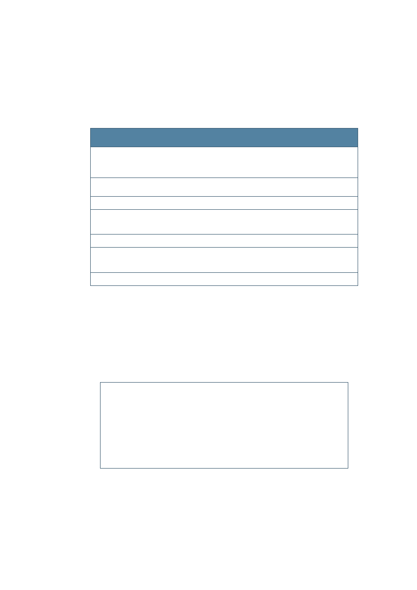
Paragraph
This element is the standard element holding content. The
role
attribute defines its
Attributes
Attribute
Required
Contents
Values
allowed
Description
role
yes
CDATA
Describes the current role of the paragraph,
for example a simple paragraph or a heading
level
no
Defines the heading level if the paragraph
role is set to "heading".
id
yes
l10n
yes
Contains the localization status of the old
help files and is only used for migration
purposes.
xml-lang
yes
CDATA
oldref
no
CDATA
This contains the reference number used by
the old help files and is only used for
migration purposes.
localize
no
fixed value
"false"
Table 25: Attributes of the paragraph element
Parent Elements
body
,
case
,
default
,
listitem
,
section
,
tablecell
Child Elements
image
,
embedvar
,
br
,
emph
,
help-id-missing
,
item
,
link
,
switchinline
,
variable
,
ahelp
,
object
,
bookmark
Element Definition
<!ELEMENT paragraph (#PCDATA | image | comment | embedvar | br |
emph | item | link | switchinline | variable |
ahelp | object | bookmark)*>
<!ATTLIST paragraph
role CDATA #REQUIRED
level CDATA #IMPLIED
id CDATA #REQUIRED
l10n CDATA #REQUIRED
xml-lang CDATA #REQUIRED
oldref CDATA #IMPLIED
localize CDATA #IMPLIED
>
58
Example
<paragraph role="heading" level="1" id="par4711_001" xml_lang="en-US">
Italic characters
</paragraph>
<paragraph role="paragraph" id="par4711_002" xml_lang="en-US">
Proceed as follows to write an italic character
</paragraph>
Section
This element serves as a generic container for multiple elements to make them able
to be embedded in other documents. Each
section
takes a unique
ID
which is used
to identify it when embedded in other documents. Subsections are allowed. A
section
can only contain sub-elements.
Attributes
Attribute
Required
Contents
Values allowed
Description
id
yes
localize
no
fixed value
"false"
Table 26: Attributes of the section element
Parent Elements
body
,
listitem
,
section
,
tablecell
,
case
,
default
Child Elements
section
,
paragraph
,
table
,
list
,
comment
,
bookmark
,
embed
,
switch
,
sort
Element Definition
<!ELEMENT section (section | paragraph | table | list | comment |
bookmark | embed | switch | sort )*>
<!ATTLIST section
id CDATA #REQUIRED
localize CDATA #IMPLIED
>
Example
<section id="4711"><paragraph>This applies to multiple
applications</paragraph><section>
59
Sort
This element is used to mark up a set of sections that are to be sorted. The sequence
of the sections inside the sort element plays no role for the display sequence.
Note that sorting does not work for embedded sections.
Attributes
Attribute
Required
Contents
Values allowed
Description
order
no
fixed values
"asc", "desc"
Defines the sorting order as being
ascending or descending.
Table 27: Attributes of the sort element
Parent Elements
body
,
section
Child Elements
section
Element Definition
<!ELEMENT sort (section+)>
<!ATTLIST sort
order (asc | desc) #IMPLIED
>
Example
<sort order="asc">
<section id="123243">...</section>
<section id="24345">...</section>
</sort>
60
Switch
This element is used to switch
sections
or
paragraphs
for different platform,
application, distribution, target medium or language context. For switching content
inside paragraphs,
switchinline
must be used.
Attributes
Attribute
Required
Contents
Values allowed
Description
select
yes
fixed values
"sys"
"appl"
"distrib"
"target"
"lang"
"ver"
Defines the context that is to be
localize
no
fixed value
"false"
Table 28: Attributes of the switch element
Parent Elements
body
,
listitem
,
section
Child Elements
case
,
comment
,
default
Element Definition
<!ELEMENT switch ((case | comment)* | default?)*>
<!ATTLIST switch
select (sys | appl | distrib | target | lang | ver) #REQUIRED
localize CDATA #IMPLIED
>
61
Example
<switch select="sys">
<case select="WIN">
<paragraph>This appears in Windows.</paragraph>
</case>
<case select="UNIX">
<paragraph>This appears in Unix.</paragraph>
</case>
<default>
<paragraph>This appears in all other cases</paragraph>
</default>
</switch>
Switchinline
This element is used to switch parts of
paragraphs
for different platform, application,
distribution, target medium or language context. For switching complete paragraphs or
sections
switch
must be used.
Attributes
Attribute
Required
Contents
Values allowed
Description
select
yes
fixed values
"sys", "appl",
"distrib", "target",
"lang", "ver"
Defines the context that is to be
Table 29: Attributes of the switchinline element
Parent Elements
caption
,
caseinline
,
defaultinline
,
paragraph
,
variable
,
link
Child Elements
caseinline
,
defaultinline
Element Definition
<!ELEMENT switchinline ((caseinline)+, (defaultinline?)?)>
<!ATTLIST switchinline
select (sys | appl | distrib | target | ver | lang) #REQUIRED
>
Example
<paragraph>Press the
<switchinline select="sys">
<caseinline select="WIN">Ctrl</caseinline>
<caseinline select="MAC">Apple</caseinline>
<defaultinline>any</defaultinline>
</switchinline>
key to start.
</paragraph>
62

Table
This element defines a table containing one or more
tablerows
. The table element
itself only contains child elements.
Attributes
Note that not all attributes are currently evaluated in the transformation style sheet (see also The
Attribute
Required
Contents
Values
allowed
Description
name
no
CDATA
Contains a table name.
width
no
CDATA
Contains the width of the table in units as
given in the
units
attribute. If omitted, the
table width is set by the help viewer.
height
no
CDATA
Contains the height of the table in units as
given in the
units
attribute. If omitted, the
table height is set by the help viewer.
unit
no
fixed
values
"px", "pt",
"cm", "in",
"pct"
Contains the unit to be used for table
width
and
height
:
px = pixels
pt = points
cm = centimeters
in = inches
pct = percent (%)
If omitted, pixels (
px
) are used as units.
class
no
CDATA
Contains a class descriptor for the table
which can be used to assign special formats.
id
yes
CDATA
localize
no
fixed value
"false"
Table 30: Attributes of the table element
Parent Elements
body
,
case
,
default
,
listitem
,
section
Child Elements
caption
,
tablerow
Element Definition
<!ELEMENT table (caption*, tablerow+)>
<!ATTLIST table
name CDATA #IMPLIED
width CDATA #IMPLIED
height CDATA #IMPLIED
unit CDATA #IMPLIED
class CDATA #IMPLIED
id CDATA #REQUIRED
localize CDATA #IMPLIED
>
63
Example
<table id="tab4711" name="List of Shortcuts"
width="90" unit="pct" class="shortcutlist">
<caption>
<paragraph>List of shortcuts</paragraph>
</caption>
<tablerow>...</tablerow>
</table>
Tablecell
This element contains child elements taking the cell content. Complex tables can be
created using the
rowspan
and
colspan
attributes of
tablecell
.
Attributes
Note that not all attributes are currently evaluated in the transformation style sheet (see also The
Attribute
Required
Contents
Values allowed
Description
colspan
no
CDATA
Contains the number of columns
spanned by this cell. If omitted,
the cell spans 1 column.
rowspan
no
CDATA
Contains the number of rows
spanned by this cell. If omitted,
the cell spans 1 row.
width
no
CDATA
Contains the width of the table
cell in units as given in the
units
attribute. If omitted, the
table cell width is set by the help
viewer.
unit
no
fixed values
"px", "pt", "cm", "in",
"pct"
Contains the unit to be used for
width
:
px = pixels
pt = points
cm = centimeters
in = inches
pct = percent (%)
If omitted, pixels (
px
) are used as
units.
class
no
CDATA
Contains a class descriptor for the
table cell, which can be used to
assign special formats.
localize
no
fixed value
"false"
Table 31: Attributes of the tablecell element
Parent Elements
tablerow
64
Child Elements
section
,
paragraph
,
comment
,
embed
,
bookmark
,
image
,
list
Element Definition
<!ELEMENT tablecell (section | paragraph | comment | embed |
bookmark | image | list)*>
<!ATTLIST tablecell
colspan CDATA #IMPLIED
rowspan CDATA #IMPLIED
width CDATA #IMPLIED
class CDATA #IMPLIED
unit CDATA #IMPLIED
localize CDATA #IMPLIED
>
Example
<table
id="tab_4711" name="List of Shortcuts"
width="90" unit="pct" class="shortcutlist">
<tablerow>
<tablecell>Column 1</tablecell>
<tablecell>Column 2</tablecell>
<tablecell>Column 3</tablecell>
</tablerow>
<tablerow>
<tablecell colspan="2">
This cell spans 2 columns, namely column 1 and 2
</tablecell>
<tablecell>
This cell spans 1 column, namely column 3
</tablecell>
</tablerow>
</table>
65
Tablerow
This element contains table rows, which themselves only contain table cells.
Attributes
Attribute
Required
Contents
Values allowed
Description
height
no
CDATA
Contains the height of the table
row in units as given in the
units
attribute. If omitted, the
table row height is set by the help
viewer.
unit
no
fixed values
"px", "pt", "cm", "in",
"pct"
Contains the unit to be used for
height
:
px = pixels
pt = points
cm = centimeters
in = inches
pct = percent (%)
If omitted, pixels (
px
) are used as
units.
class
no
CDATA
Contains a class descriptor for the
table row which can be used to
assign special formats.
localize
no
fixed value
"false"
Table 32: Attributes of the tablerow element
Parent Elements
table
Child Elements
tablecell
66
Element Definition
<!ELEMENT tablerow (tablecell+)>
<!ATTLIST tablerow
height CDATA #IMPLIED
class CDATA #IMPLIED
unit CDATA #IMPLIED
localize CDATA #IMPLIED
>
Example
<table id="tab_4711" name="List of Shortcuts"
width="90" unit="pct" class="shortcutlist">
<tablerow>
<tablecell>Column 1</tablecell>
<tablecell>Column 2</tablecell>
<tablecell>Column 3</tablecell>
</tablerow>
</table>
Title
This is the title of the help page as displayed in the list on the
Contents
tab page, the
Index
list and the search results. The title content cannot contain HTML entities like
'
or
&
.
Attributes
Attribute
Required
Contents
Values allowed
Description
xml-lang
yes
CDATA
id
yes
CDATA
localize
no
fixed value
"false"
Table 33: Attributes of the title element
Parent Elements
topic
Child Elements
none
Element Definition
<!ELEMENT title (#PCDATA)>
<!ATTLIST title
xml-lang CDATA #REQUIRED
id CDATA #REQUIRED
localize CDATA #IMPLIED
>
67
Example
<topic>
<title xml_lang="en-US" id="tit1233">Opening a text document</title>
</topic>
Topic
This element contains child elements with information about the current help topic.
Attributes
Attribute
Required
Contents
Values allowed
Description
id
yes
CDATA
indexer
no
fixed value
"exclude", "include"
Specifies whether the current file
is to be excluded from the
indexing process. An excluded file
cannot be found using the help
search facility.
Table 34: Attributes of the topic element
Parent Elements
meta
Child Elements
title
,
bookmark
,
filename
Element Definition
<!ELEMENT topic (title+, filename, bookmark*)>
<!ATTLIST topic
id CDATA #REQUIRED
indexer (exclude | include) #IMPLIED
>
Example
<topic id="4711" indexer="exclude">
<title xml_lang="en-US">Invisible help file</title>
<filename>text/swriter/01/08154711</filename>
</topic>
68
Variable
This element is used to define reusable text fragments. The fragments can be
embedded in other contexts by means of the
embedvar
element.
Attributes
Attribute
Required
Contents
Values allowed
Description
id
yes
CDATA
visibility
no
fixed values
"hidden", "visible"
Specifies whether the element
content will be shown in the help
viewer. If this attribute is omitted,
the variable will be visible.
Table 35: Attributes of the variable element
Parent Elements
ahelp
,
caption
,
caseinline
,
defaultinline
,
link
,
paragraph
,
variable
Child Elements
ahelp
,
embedvar
,
br
,
emph
,
item
,
link
,
variable
,
image
,
object
,
switchinline
Element Definition
<!ELEMENT variable (#PCDATA | ahelp | embedvar | br | emph |
item | link | variable | image | object |
switchinline)*>
<!ATTLIST variable
id CDATA #REQUIRED
visibility (hidden | visible) #IMPLIED
>
Example
You may use the <variable id="dlg_FileOpen"><item type="dialog">Open a
file</item></variable> to open a file.
<comment>List of menu names to be embedded</comment>
<paragraph xml_lang="en-US">
<variable id="menu_File" visibility="hidden">File Menu</variable>
<variable id="menu_Edit" visibility="hidden">Edit Menu</variable>
<variable id="menu_View" visibility="hidden">View Menu</variable>
</paragraph>
69
Contents File (*.tree) Elements
The contents files (
*.tree
) are used to specify the hierarchy displayed on the
Contents
Tree_view
This is the root element for a contents file.
Attributes
Attribute
Required
Contents
Values allowed
Description
version
yes
CDATA
Table 36: Attributes of the tree_view element
Parent Elements
none
Child Elements
help_section
Element Definition
<!ELEMENT tree_view (help_section)+>
<!ATTLIST tree_view
version CDATA #REQUIRED
>
Example
<tree_view version="24-Aug-2004">
<help_section application="swriter" id="01" title="Installation">
...
</help_section>
</tree_view>
70
Help_section
The
help_sections
are the top-most elements in the table of contents as displayed
by the help viewer.
Attributes
Attribute
Required
Contents
Values allowed
Description
application
yes
CDATA
Designates the help module
that a help_section is referring
to
id
yes
CDATA
title
yes
CDATA
This is the title of a
help_section as displayed in
the help viewer
Table 37: Attributes of the help_section element
Parent Elements
tree_view
Child Elements
node
,
topic
Element Definition
<!ELEMENT help_section (node|topic)*>
<!ATTLIST help_section
application CDATA #REQUIRED
id CDATA #REQUIRED
title CDATA #REQUIRED
>
Example
<tree_view version="24-Aug-2004">
<help_section application="swriter" id="01" title="Installation">
...
</help_section>
</tree_view>
71
Node
Nodes are the hierarchical elements that represent topic groups and contain help
topics. In the help viewer, they are represented by book icons. Nodes can have
subnodes.
Attributes
Attribute
Required
Contents
Values allowed
Description
id
yes
CDATA
title
yes
CDATA
This is the title of a node as
displayed in the help viewer
Table 38: Attributes of the node element
Parent Elements
help_section
Child Elements
node
,
topic
Element Definition
<!ELEMENT node (topic)*>
<!ATTLIST node
id CDATA #REQUIRED
title CDATA #REQUIRED
>
Example
<tree_view version="24-Aug-2004">
<help_section application="swriter" id="10" title="Common Topics">
<node id="1001" title="General Information">
<topic id="shared/text/shared/main0400.xhp">Shortcut
Keys</topic>
...
</node>
</help_section>
</tree_view>
Topic
Topics are links that point to help files. The
id
attribute contains the URL of the file to
be loaded. The element contains the file title.
When the script
update_tree.pl
from the
helpers
directory in the
helpcontent2
module is used to update the tree files, the element content is automatically updated based on the
file titles. This also applies to localized languages.
72
Attributes
Attribute
Required
Contents
Values allowed
Description
id
yes
CDATA
Table 39: Attributes of the topic element
Parent Elements
help_section
,
node
Child Elements
none
Element Definition
<!ELEMENT topic (#PCDATA)>
<!ATTLIST topic
id CDATA #REQUIRED
>
Example
<tree_view version="24-Aug-2004">
<help_section application="swriter" id="10" title="Common Topics">
<node id="1001" title="General Information">
<topic id="shared/text/shared/main0400.xhp">Shortcut
Keys</topic>
...
</node>
</help_section>
</tree_view>
73


4 Authoring Help With OpenOffice.org
You need OpenOffice.org 1.1.x to use the help authoring environment. The authoring environment
also is not yet compatible with OpenOffice.org 2.0.
Setting Up the Environment
There is an import/export filter available that allows for direct editing of OpenOffice.org
help files without the need of extra conversion steps. The following describes how you
set up the filter.
The filters are xsl files that are used in conjunction with an import template and takes
advantage of OpenOffice.org xsl filter functionality.
The help files use the extension xhp.
Directory Hierarchy
The correct function of the help authoring environment with OpenOffice.org relies on
the CVS module directory layout. Since all help file and image references are
expressed relatively, the environment needs to know the absolute paths to be able to
assemble and disassemble the references correctly for display in OpenOffice.org.
Us the following directory structure when checking out the modules from CVS. If you
work in a Child Workspace, this is the default directory layout:
$root
|__default_images <-- check out from CVS
|__helpcontent2 <-- check out from CVS
|__helpers
|__util
|__prj
|__source
|__text
|__auxiliary
Before you set up the environment you need to select and create a root directory for
working on the help files (
$root
), for example:
/opt/ooohelp
or
D:\ooohelp
75

Creating the image directory
The CVS module
default_images
contains all images thatare used by the help.
·
Check out the module
default_images
from OpenOffice.org CVS into the
help root directory (as described above).
Creating the help files directory
·
Check out the module
helpcontent2
from OpenOffice.org CVS into the help
root directory (as described above).
Installing The Import/Export Filters
Ensure that the XML Filter option is installed in OpenOffice.org. If this option is not
installed, install it using the option from the the OpenOffice.org setup.
1. Get the filter package from the
helpers/helpauthoring
directory of the
helpcontent 2
CVS module. There is one common package for Windows
and Unix.
2. The packages contain the XSLT Import/Export filters and the template.
3. Open a text document in OpenOffice.org. The menu item for the XML Settings
will only be visible if a document is loaded.
4. Choose
Tools - XML Filter Settings
5. Click
Open Package
6. Browse to the filter package and click
Open
.
7. Click
Close
You can now open and save files in OpenOffice.org help format.
Note that occasionally, OpenOffice.org seems to corrupt the packaged files while
unpacking. If you are unable to load or save help files, check the xsl files in the
user/xslt/Help
directory and the template in the
user/template/Help
directory.
You can also, extract the file manually from the package using a zip file utility.
Installing The Supporting Macros
The macro set is used to perform tasks inside the help files.
The macros are only tested with OpenOffice.org versions 1.1.x
if you want to port them to OOo 2.0!
76

1. Get the macro archive
HelpAuthoring.tar.gz
from the
helpers/helpauthoring
directory of the
helpcontent 2
CVS module.
2. Unpack it to a temporary directory.
3. Choose
Tools - Macros - Macro
4. Click
Organizer
5. Click the
Libraries
tab
6. Click
Append
and browse to the temporary directory with the unpacked
macros
7. Select the file
script.xlb
inside the macro directory and click
Open
8. Select
Replace existing libraries
and click
Ok
9. Close the macro dialogs
You can now use the macros for help authoring. The macros create a configuration
file
helpauthoring.cfg
to store various information and settings in your
user/config
directory.
For some tasks, the macro set needs to recognize the paths to your help files and images as
described on page 75. You will be asked to provide these paths once a macro needs it. The paths
will then be stored inside your
user/config
directory in the file
helpauthoring.cfg
. You
need to delete this file when the paths to your help files or images change.
Installing The Help Authoring Menu
The Help Authoring menu allows easy access to the macros to perform standard
tasks with the help files.
This procedure overwrites any menu customization that you have made!
1. Get the menu archive
helpauthoring_menu.zip
from the
helpers/helpauthoring
directory of the
helpcontent 2
CVS module.
2. Choose
Tools - Configure
and select the
Menu
tab
3. Click
Load
4. Locate the
helpauthoring_menu.zip
file
5. Select the file and then click
Ok
77

If all steps were performed successfully, you should now be able to use the menu.
Editing Help Files - Basics
Since OpenOffice.org cannot simply be used as an XML edito,r we need to make
some effort to map elements and attributes in the help file to elements that are
recognized by OpenOffice.org.
For now, not all attributes for the elements are supported for editing in OpenOffice.org. The major
ones, however, are available.
Paragraphs And Paragraph Formatting
Paragraphs are the central content carrying element in a help file. A
paragraph
in the
help file maps to a paragraph in OpenOffice.org. The
role
attribute of a paragraph
maps to a paragraph style in OpenOffice.org.
For every paragraph role in the help file there is a paragraph style beginning with
hlp_
and ending with the role name, e.g. the role
paragraph
maps to a style named
hlp_paragraph
.
There are also special paragraph styles that start with
hlp_aux_
. These are used for
identifying special elements and should never be used for paragraphs.
Any paragraph that does not have a paragraph style starting with
hlp_
will be disregarded on
export by the export filter. Its content will be lost on the next reload of that file.
The default paragraph styles for a help file (that is, the default roles of a paragraph)
are already pre-defined in the help authoring template (
xmlhelptemplate.stw
) that is
used for loading the help files in OpenOffice.org. This template is part of the
import/export package and automatically installed in your
user/template
directory.
You can define new paragraph styles that are transformed to roles in the help files on
export by creating a custom style beginning with
hlp_
and ending in the role name.
This new style will be recreated on loading that file in OpenOffice.org next time.
However, there will be no formatting information for OpenOffice.org associated with it.
For that, the style needs to be added to the template.
Note, that these styles don't have any effect on the help as it is displayed as such. In
order to adjust the help appearance the roles that are created from the paragraph
styles must be transformed by the main transformation style sheet and/or assigned to
formats using the cascading style sheets of the help.
78

Sections
A
section
in the help file maps to a section in OpenOffice.org. You can use the
navigator to get an overview of existing sections or use the
Insert - Section
and
Format - Sections
menus to modify existing sections. The section
ID
maps to
the section name in OpenOffice.org. Nested sections are supported.
Tables
A table in an OpenOffice.org help file transforms to a visible table in the
OpenOffice.org file. The table name holds all attributes for that table. If the table has a
caption defined in the help file, a paragraph is created directly after the table that
contains the caption. It is important that this sequence is not modified since the export
filter relies on that sequence.
Tables should no longer be used for formatting purposes, for instance, to place
images or to mimic numbered lists. Nevertheless, there still is a considerable amount
of legacy help files that do that.
Images
Images are mapped to image objects in OpenOffice.org that are linked (not
embedded) to the OpenOffice.org file and anchored as character. The alternative text
is defined in the
Alternative
property of the image object that can be accessed
through the
Graphics
properties dialog (by double-clicking the image) on the
Options
tab page. The
ID
of an image is stored in the name of the image object and
should not be altered manually.
The images will only be displayed in OpenOffice.org correctly if the path to the image files was
correctly specified in the import and export filters (see on page ).
Lists
There are two types of lists in the help (unordered and ordered) that match to the
corresponding list type in OpenOffice.org.
Embedding
The embedding technique is unique to the help. Therefore, we use some workarounds
to implement embedding when editing the help files in OpenOffice.org:
·
Sections to be embedded are represented as sections.
·
Paragraph parts to be embedded are surrounded by a
variable
tag pair.
·
Places where sections are embedded are designated by an
embed
tag.
·
Places where parts of paragraphs are embedded are designated by an
embedvar
tag.
79

Character Formatting
Direct (hard) formatting is not supported. Any character with a direct format will lose
its format definition on export. Instead, character formatting is achieved using
character styles. The importing template already contains a list of pre-defined
character styles. All styles that begin with
hlp_
can be used for character formatting
except for the styles beginning with
hlp_aux_
because those are used for internal
purpose.
Similar to the paragraph styles, you can define new character styles that are
transformed to
type
attributes of
item
elements in the help files on export. To do this,
create a custom character style beginning with
hlp_
and ending in the type name
(e.g.,
hlp_dialogname
)
. This new style will be recreated on loading that file in
OpenOffice.org next time. However, there will be no formatting information for
OpenOffice.org associated with it. For that, the style needs to be added to the help
authoring template.
Note that these styles don't have any effect on the help as it is displayed as such. In order to adjust
the help appearance, the item types that are created from the character styles must be transformed
by the main transformation style sheet and/or assigned to formats using the style sheets of the help.
Working With the Help Files
Ensure that you have set up your work environment correctly as described in Setting Up the Envi-
Creating A Help File
1. Start OpenOffice.org and open a new empty Writer window.
The help authoring menu is only available in the Writer context. So you need
to have a Writer window open.
2. Choose
Help Authoring - Create New Help File
.
You should always create a new file this way to ensure that all settings are
made correctly.
3. Select a file name inside the help directory structure
The directory structure is described on page 75. You will be automatically
prompted to save the file. You need to save it before you can actually work on
it.
4. Insert an initial comment (optional)
You will be prompted to insert a comment on file creation. This comment will
be stored in the file metadata and cannot be changed using OpenOffice.org.
80

Now you have created a fresh empty help document. The file title is set to the generic
term
<Set Topic Title>
Switch the Stylist to show
Custom
styles to view a list of all styles that are allowed in
the help file. None but these (and the ones created by you following the guidelines
above) can be used.
After the file is finished it needs to be added to the list of files to be processed by the help compiler.
This is done by adding the file to the makefile of its directory. You can either do that manually or run
the
createmakefiles.pl
script when you have finished working on the help files. For details,
Opening A Help File
1. Choose
File Open
Browse to the file you want to open and select
Help (*.xhp)
as the file
type
2. Click
Open
Removing A Help File
Since a help file is referenced from multiple locations, simply deleting a file from disk
is not sufficient for removing a help file from the set of help files.
To remove a help file from the set of help files that are compiled, you need to remove
it from the makefile of its directory. In this way, it will not be included in the index, or
the full text search. However, it will still be included in the help files archive
*.jar
.
To delete a help file completely, you need to remove it from your local disk and
remove its entry in the makefile of its directory. If you work on the CVS you also need
to remove it from the CVS repository.
You also need to remove all dependency files in the output tree that are created
19. If you haven't built the help set before you don't need to worry about this. If you
have changed multiple files it is safer to remove the output tree completely and rebuild
the help from scratch.
Finally, you need to ensure that the deleted file is not referenced by other help files or
by the content files
*.tree
in the auxiliary directory.
To remove a help file
1. If this change will be committed back to the CVS, remove the help file from
the CVS repository, for example, using the
cvs remove
for information about OpenOffice.org CVS
81

2. Delete the help file on your local disk.
3. In the
makefile.mk
of its directory, locate the help file's entry (it has the
extension
.hzip
instead of .
xhp
) and delete the corresponding line.
This step is not required if you use the
createmakefile.pl
script from
helpcontent2/helpers
to update all makefiles before building the help.
4. Check if the help file is referenced in on of the
*.tree
files in
helpcontent2/source/auxiliary
and delete its reference there, if required.
5. If you have built the help before and you have an existing output tree with
dependency files
*.dphh
, delete any dependency files that reference the
deleted help file. A dependency file lists all files that it depends on.
Moving A Help File
From the build environment's view, moving a help file from one directory to another is
equivalent to removing a file from one directory and creating a file in another directory.
1. Copy the help files to the new directory.
2. Follow the procedure described previously for removing a help file.
3. Ensure that all links inside the moved help file to itself have been adjusted.
4. Add the file to the
makefile
of the new directory.
This step is not required if you use the
createmakefile.pl
script from
helpcontent2/helpers
to update all makefiles before building the help.
Note that moving a help file
can
create new localization effort since the moved help file looks like a
brand new file to the localization process. However, translation memory systems should be able to
automatically translate it because the content did not change - except for internal links.
Sections and Paragraphs
Sections are used to specify parts of help files that are used for referencing purpose in
other files. Sections can be embedded and linked.
Where Are The Sections?
Since OpenOffice.org natively supports sections, we make use of them to represent
sections in help files. The
ID
attribute of a section in the help is represented by the
name
property of the section in OpenOffice.org.
All other properties of sections inside OpenOffice.org have no influence on the help
sections. Any layout settings made to sections (background, visibility...) are lost on
next reload.
82
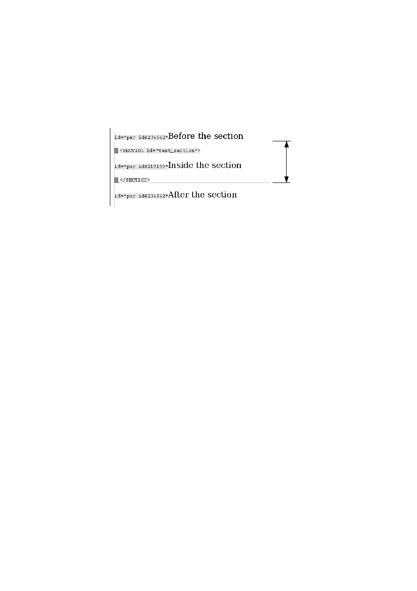
You can use the navigator to view and navigate sections. Nested sections are also
supported ,both by the help and by OpenOffice.org.
Sections start and end with a
section
tag that is placed in the first paragraph directly
after the section starts, and in the last paragraph before the section ends:
If you want to insert something before or after a section, ensure that you place it
before or after the section delimiter line, not just before or after the
section
tag.
If the section starts at the top of the document and you want to insert something
before that section, go to the top of the section and press
Alt+Return
to create a
paragraph in front of the section.
If the section ends at the bottom of the document and you want to insert something
after that section, go to the bottom of the section and press
Alt+Return
to create a
paragraph after the section.
Adding A Section
1. Depending on whether you want to insert a new empty section or build a
section around existing text, do one of the following:
·
Place the cursor where you want to insert the new empty section.
·
Mark the piece of the document that you want to include in a section.
2. Choose
Help Authoring - Insert Section
3. Insert an identifier for the section in the text box.
This section identifier will be used as
ID
attribute for the section in the help
file. It must be unique within the file. It is advisable to use some kind of
descriptive name. Use only letters, numbers and the underscore.
83
Fig. 6: Section tags and section areas
S
ec
tio
n

Adding A Subsection
A subsection is a section that is the child of another section. OpenOffice.org supports
nested sections. The procedure to insert a subsection is the same as inserting a
section, except that if you insert a section with the cursor inside an existing section
you will create a subsection.
You cannot create overlapping sections. Neither the help format nor OpenOffice.org
support this.
Removing A Section
1. If you want to remove a section including its content, delete the section
content first.
2. Choose
Format Sections
.
3. Select the section you want to remove from the list of sections and click
Remove
.
If you remove a section that has subsections only, the selected section will be
removed while the subsections will be preserved.
If you remove a section, ensure that no other file references it to avoid broken links.
Linking To A Section
You can create a link to a section by specifying the section ID as the target in the
hyperlink URL when creating a link, for example
<link href="text/shared/guide/file_name.xhp#section_id">
Embedding A Section
You can embed a section using the
embed
element. You need the file name and the
ID
of the section that you want to embed. The embedded section preserves its
Adding A Paragraph
Paragraphs in the Help have some attribute values that cannot be represented in
OpenOffice.org without using certain workarounds. Therefore, you need to follow the
following instructions to create valid paragraphs.
You can write the paragraph content in the usual way. You only have to ensure that
·
the paragraph has meta information associated with it
84

·
the paragraph has a valid paragraph format assigned
The paragraph meta information consists of the paragraph
ID
, the
language
(which in
the source files is always
en-US
), the
localize
attribute, and some other attributes
that are not relevant in this context.
All of these values are stored in a variable field at the beginning of the paragraph. The
paragraph
ID
identifies the paragraph contents in the localization database.
If the
ID
of a paragraph gets lost or is changed it is regarded as new for the database and needs to
be localized again. So tampering with
IDs
must be strictly avoided.
Before saving the final file, each paragraph must have a valid and unique
ID
. The
easiest way to do this is to place the cursor somewhere in the paragraph and to
choose
Help Authoring - Paragraph - Set Paragraph ID
. If the paragraph
does not have the correct style associated (see below) ID creation will be denied.
Paragraph IDs are also be assigned when the file is validated using
HelpAuthoring
Validate
.
Not all paragraphs get IDs. Some paragraphs only contain structural information, such
as opening and closing tags, or bookmarks, and don't need an ID because they don't
transform back to content paragraphs in the help file. All these paragraphs have a
paragraph style assigned that starts with
hlp_aux_
.
If you forget to assign IDs to all corresponding paragraphs, the application will do that
for you on saving, provided the template was correctly installed.
Editing A Paragraph
Editing the contents of a paragraph does not need any further action. The localization
process finds out for itself when in the content of a paragraph has changed.[12]
This has two consequences for the writers:
1. You do not need to worry about whether a change has an influence on the
localization.
2. You cannot force re-translation of a paragraph by just setting any editing flag.
For basic content management purposes, the
l10n
attribute of a paragraph can be
used for setting paragraph status values, since this attribute was only relevant for the
migration phase.
For instance, you can set the paragraph status to
NEW
or
CHG
(changed) to allow
reviewers to easily spot these paragraphs for content review. Any other values come
from the migration phase and are no longer relevant. Paragraphs that have been
reviewed don't carry an
l10n
attribute (or carry an empty one).
12 For details on the localization process see
l10n.openoffice.org
.
85

Note that this attribute is evaluated nowhere. It only influences the display of the paragraph in
OpenOffice.org (the meta data appear with yellow background). If you want to use it, you will have
to take care of its evaluation in the context of content management yourself.
Paragraph Formatting
All paragraphs in a help file are formatted using paragraph styles. Direct formatting
(borders, indentation, etc.) is strictly unsupported. In fact, all direct formatting will
simply be lost on export.
Use the predefined styles to format the paragraphs. The following styles are available
in the help authoring template (switch to the
Custom
view in the Stylist):
·
hlp_default
This is the parent style for all
hlp_*
styles and only used as a fallback. It
translates to a
paragraph@role="paragraph"
in the help file.
·
hlp_paragraph
This is the standard style to be used for paragraphs. It translates to a
paragraph@role="paragraph"
in the help file.
·
hlp_head
, and
hlp_head1...hlp_head5
The
hlp_head
style is the parent style for the other
hlp_head*
styles and
should never be used as such. The
hlp_head*
styles designate heading
elements
of
different
levels.
They
translate
to
paragraph@role="heading"@level="x"
in the help file with
x
corresponding
to the heading level.
·
hlp_listitem
This is the style to be used for list items. Its use is optional, as paragraphs
inside list items can also have the paragraph style. It translates to a
paragraph@role="listitem"
in the help file.
·
hlp_tablehead
This is the style to be used for table header cells. It translates to a
paragraph@role="tablehead"
in the help file when the
main_transform.xsl
stylesheet is used.
·
hlp_tablecontent
This is the style to be used for table content cells. It translates to a
paragraph
@role="tablecontent"
in the help file.
·
A couple of
hlp_aux_*
styles
These are not meant to be used by the writers. These styles designate
paragraphs that contain structural information rather than content.
86

Creating New Styles
If the styles in the pre-defined set are not sufficient for your purpose you can create
new styles as long as they follow these rules:
·
A new paragraph style must be based on the
hlp_default
style
·
The style name must begin with
hlp_
·
The style name must not begin with
hlp_aux_
You can use these styles in the help document. They will be transformed to values of
the
role
attribute for a paragraph in the help file, for instance,
hlp_mystyle
will result
in a paragraph with the
role
set to
mystyle
.
This style will be reconstructed when the help file is loaded. But any formatting
information for OpenOffice.org will be lost. Also, the style will only be available in that
file. If you want the style to be available for all documents and have a defined
appearance it must be added to the help authoring template.
In order to have a special appearance in the final help, the role must also be
addressed in the stylesheets that are delivered with the help and define its
appearance.
Changing A Paragraph Style
Changing the style of a paragraph has no impact on the localization process. Only the
contents of a paragraph (including inline elements) are subject to localization.
Changing A Character Style
Changing the style of a character inside a paragraph does have an impact on the
localization of that paragraph since the character style transforms to an
<item type="">
inline element.
Moving A Paragraph Inside A Help File
You can safely move a paragraph in a help file without the need of further action. The
paragraph styles might need adjustment if the paragraph is moved to a different
context in a help file.
Ensure that you also move the paragraph meta data that are stored in the variable field at the start
of the paragraph. If you copy a paragraph, however, never copy the meta data. The
ID
of a para-
graph must be unique within a help file.
Moving A Paragraph To A Different Help File
Moving a paragraph from one file to another is a sequence of deleting and creating
that can be accomplished by cutting and pasting the paragraph without its meta data.
87

For localization purposes, this will be recognized as a new paragraph.
Excluding A Paragraph From Localization
Paragraphs can be excluded from localization. In this case, the localized help files
contain the English source for the corresponding paragraph. This is controlled by the
localize
attribute of a paragraph. If it is set to
false
the paragraph will not be
localized, in all other cases it will.
To exclude a paragraph from localization choose
Help Authoring - Paragraph
- Exclude from L10N
.
88
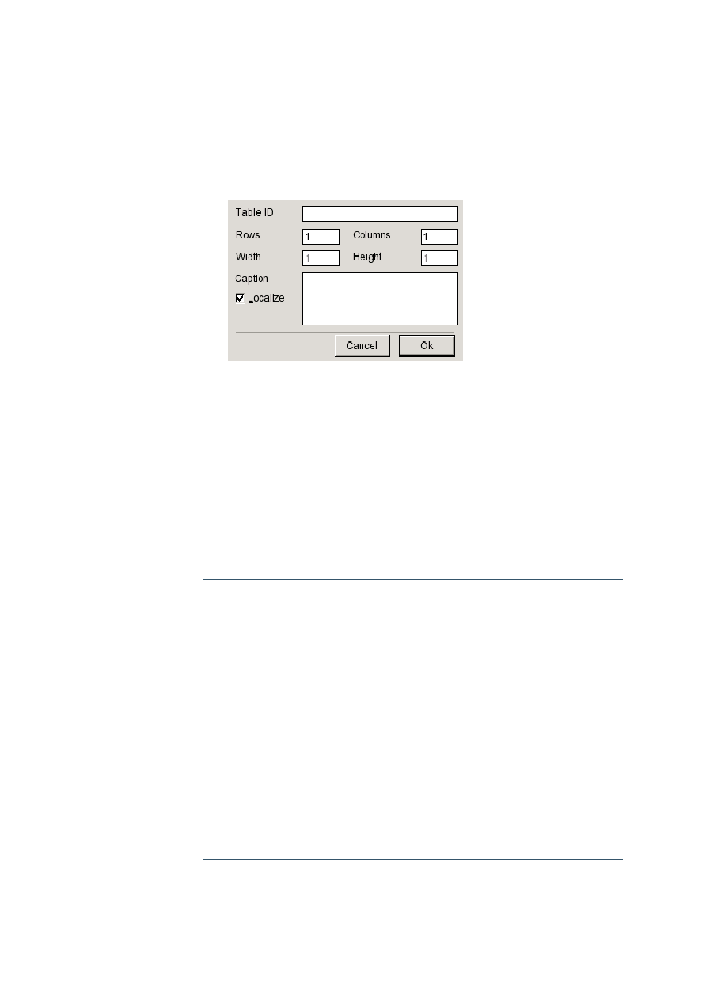
Tables
Adding A Table
1. Choose
Help Authoring - Table - Insert Table
2. Insert the initial number of rows and columns in the corresponding text boxes.
3. You can change the table layout after creation, if required.
4. The
width
and
height
values are currently unsupported.
5. If required, insert a table caption in the
Caption
text field.
6. You can exclude the caption from localization by clearing the
Localize
check box.
7. Click
Ok
Nested tables are unsupported. You cannot insert a table in another table.
The meta data of the table are stored "encoded" in the Name property of the table in
OpenOffice.org. This must be left untouched.
The created table is followed by a paragraph containing the caption, if a caption was
defined.
Modifying The Table Layout
After creation of the table you can change the table layout to suit your needs. You can
add or remove rows or columns.
Initially, the column widths will be distributed equally. You can manually resize the
column widths but for now this will be lost on next reload.
Never ever merge cells. Complex layouts are untested and
can
lead to unexpected results.
89

Deleting A Table
Delete a table as usual in OpenOffice.org. Make sure that the trailing paragraph with
the caption is also removed.
Using A Table For Formatting Purposes
Don't do that.
There are still many places in the help files that use tables for formatting. We will try to
get rid of these occurrences over time.
Adding A Caption To An Existing Table
When you have created a table and want to add a caption to it proceed as follows:
1. Place the cursor after the paragraph containing the table attributes.
In any other place the script will reject adding a caption.
2. Choose
Help Authoring - Table - Insert Table Caption
3. Specify the caption text and click
Ok
.
Lists
Inserting, Removing, Modifying Lists
You can work with lists as you would usually do in OpenOffice.org if you note the
following:
Interrupting A List
A list that is interrupted by a paragraph that is not part of the list, and then continued
with the next number as displayed below on the left, is unsupported. If you create
such a list in OpenOffice.org it will transform to the list below on the right after the
reload. You will end up with two separate lists both starting with 1 (see Fig. 7).
A list where the paragraph is unnumbered but is still part of the list item is supported
and will work fine. In OpenOffice.org you achieve this by pressing the
Backspace
key
once to get rid of the list number.
90
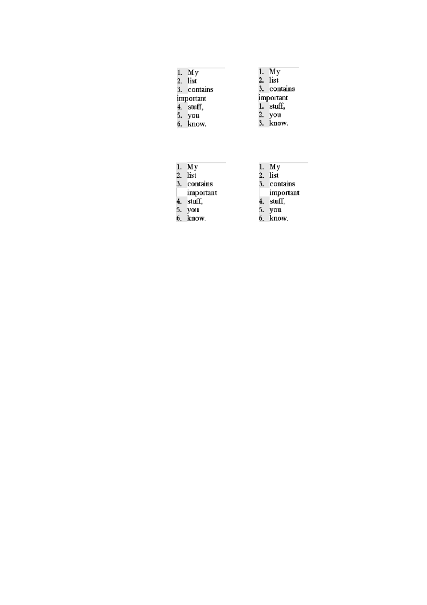
before
after reload
Fig. 7: Incorrect list design
before
after reload
Fig. 8: Correct list design
Images in lists can be placed in such paragraphs. There is no need to mimic lists
using table constructions.
Working with Images
Help Image Repository
Help images are stored inside the
res/helpimg
subdirectory of the
default_images
CVS module. Images that are used by the help need to be added to this repository
module. See
tools.openoffice.org
for details on working with the OpenOffice.org
CVS repository.
The
helpimg
directory contains all help images in English. Subdirectories for each
language (except for the source language which is
en-US
) contain the localized
images. If an image does not need localization it only needs to be present in the
helpimg
directory. The subdirectories are named using the ISO codes for language
and country as described on page 13.
To add an image to the repository
1. Place the English image inside the
res/helpimg
directory of the
default_images
module.
2. Place the localized images inside the corresponding language subdirectories of
res/helpimg
, for example
zh-CN
for simplified Chinese.
You must mark the image as to be localized using the
Help Authoring -
Image Image needs L10N
menu. An image that needs localization will
91

appear with a red border in OpenOffice.org (not in the final help, of course).
You can use
Help Authoring - Image No L10N for Image
to clear
the localization mark.
If the image is not marked as to be localized, the help will always display the English
image regardless whether there are localized images available.
3. Open the file
helpimg.ilst
in the
util
directory of the
helpcontent2
module and add the English and all localized variants to the file. Keep the file
entries sorted.
To Remove an Image from the Repository
1. Remove the English and localized files from the CVS
2. Open the file
helpimg.ilst
in the
util
directory of the
helpcontent2
module and remove the corresponding file entries.
Inserting A Block Image
A block image is an image that is located in a paragraph of its own. It can contain a
caption.
1. Choose
HelpAuthoring - Image - Insert Image
.
2. Select an image file to insert and click
Open
.
The image must be located inside the help file hierarchy as described in
3. Specify an alternative text for the image (mandatory). This text is needed to
comply with accessibility regulations.
4. Specify a caption text for the image (optional).
The image will be added on a paragraph of its own surrounded by
img
tags. If you
have specified a caption this caption text will appear inside
imgcaption
tags.
Inserting An Inline Image
An inline image is an image that is displayed inline in between paragraph text. It can
not contain a caption.
1. Choose
HelpAuthoring - Image - Insert Inline Image
.
2. Select an image file to insert and click
Open
.
The image must be located inside the help file hierarchy as described in
3. Specify an alternative text for the image (mandatory).
This text is needed to comply with accessibility regulations. The image will be
added to the paragraph surrounded by
img
tags.
92
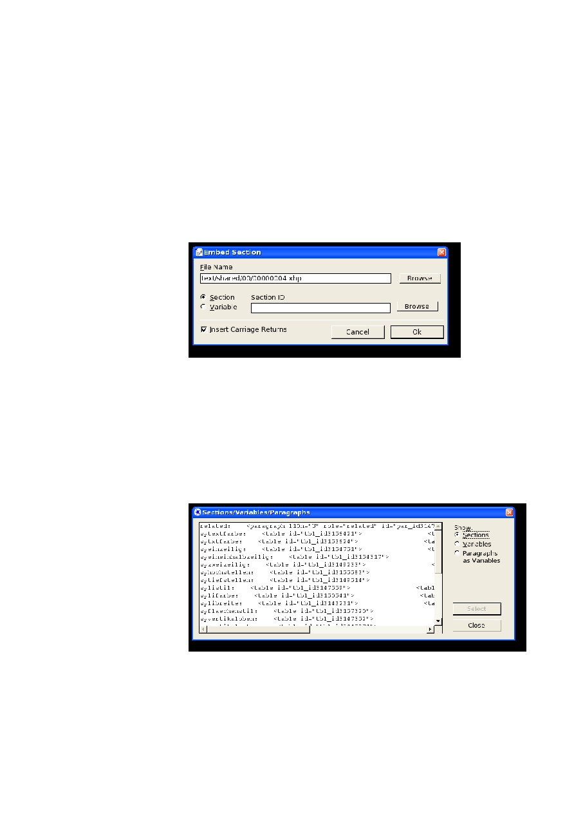
Adding An Image Caption
You can add a caption to an existing block image.
1. Choose
HelpAuthoring - Image - Insert Caption
.
2. Specify a caption and click
Ok
.
Embedding Content
Embedding A Section Or Variable
1. Choose
Help Authoring - Embed Sections or Variables
2. Enter the name of the file that contains the section or variable to be
embedded in the
File Name
text box or click
Browse
to browse for a file.
The path starts with the
text
directory in the help directory hierarchy (see
3. Select whether a variable (text block in a paragraph or the complete contents
of a paragraph) or a section is to be embedded.
4. Insert the section or variable
ID
or click Browse to browse all sections,
variables, and paragraphs in the selected file.
93
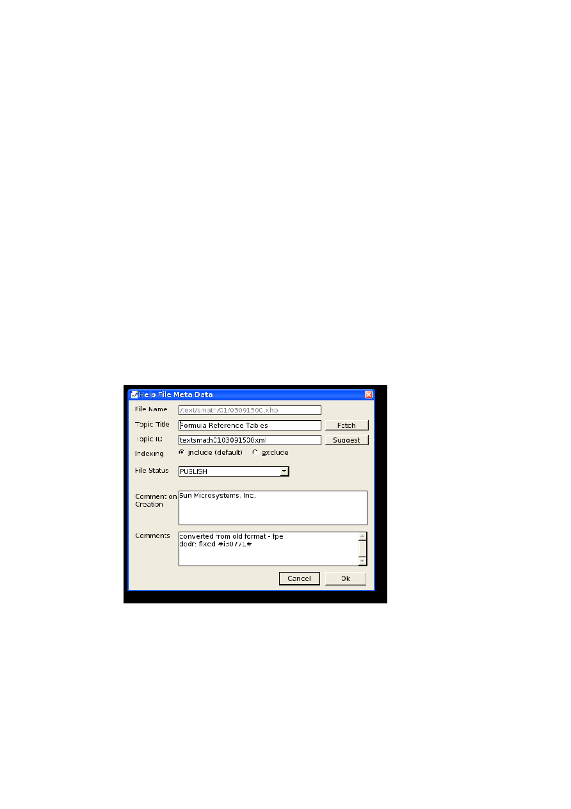
Linking
Linking To Another Help File
1. Mark the text that you want to appear as hyperlink.
2. Choose
Help Authoring - Insert Link
3. Enter the name of the file to link to in the
Link target
box. The path starts
with the
text
directory in the help file hierarchy. The path can contain a target
anchor, for example,
text/swriter/01/01020304.xhp#anchor
4. Click
Ok
Linking To The WWW
Proceed as with links to help files, but instead specify a WWW URL as link target.
Meta Data
The meta data are available through the
Help Authoring - Meta Data
menu
that calls the
Meta Data
dialog:
94
Setting The Topic Title
On help file creation, the topic title is set to a generic string. This must be changed
before finally saving the file.
1. Choose
Help Authoring - Meta Data
2. Insert a topic title in the corresponding text box or click
Fetch
to fetch the
topic title from the first heading in the document.
The topic title must not be empty.
Setting The Topic ID
On document creation, the topic ID will be set from the file name. There is usually no
need for setting the topic ID manually but you can do so by entering the ID in the
corresponding text box. Characters that are not allowed are automatically stripped
from the ID. Clicking
Suggest
creates an ID based on the filename (like when the file
is created).
Excluding A File From The Search Index
By default, all files are included in the full text search index creation. You can exclude
files form this search index by selecting the
exclude
option in the
Indexing
section.
Changing The Initial File Creation Comment
If you are do not like your initial comment you need to patch the
xhp
file.
Changing The Last Edited Comment
You can insert a comment when you edit and save a help file. This comment can be
used to describe why a change was made and what changes were performed. A new
comment overrides existing comments.
Bookmarks
Bookmarks host index entries, help IDs, and entries for the table of contents
Adding A New Bookmark Set With Index Entries
1. Place the cursor where you want the index entry to appear.
Remember that an index entry transforms to an anchor target in the help file.
Therefore, an index entry should always be placed directly above the text it
refers to. Index entries that refer to the complete help topic should be placed
at the top of the file.
13 TOC entries are currently unused.
95
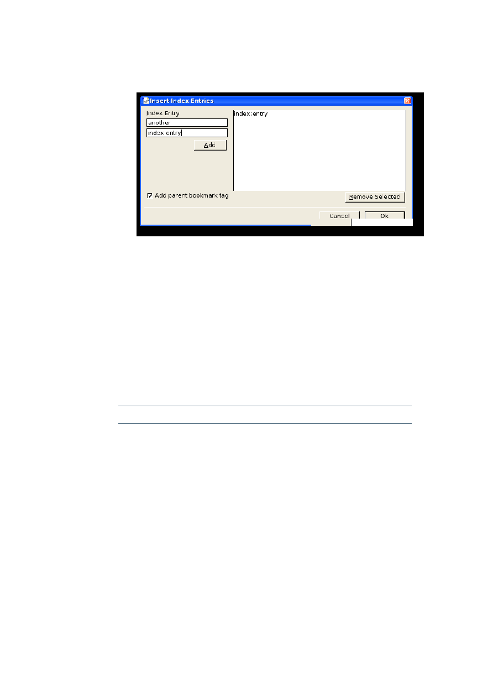
2. Choose
Help Authoring - Bookmarks - Insert Index Entries
.
Enter the first and second level of the index entry in the
Index Entry
text
boxes and click
Add
or press the
Ins
key to add it to the list of index entries.
You can remove index entries from the list by selecting them and clicking
Remove Selected
.
3. Select
Add parent bookmark tag
to create a new set of index entries. If
you want to add index entries to an existing set you need to clear this box
(see next procedure).
4. Click
Ok
.
Adding Index Entries To An Existing Bookmark Set
You cannot mix different types of bookmarks (index entries, help ids, and TOC entries).
1. Place the cursor inside the set of index entries where you want to add index
entries.
2. Choose
Help Authoring - Bookmarks - Insert Index Entries
.
3. Compile the list of index entries that you want to add to the bookmark set like
described in the previous procedure.
4. Clear the
Add parent bookmark tag
box.
If the box is checked a new bookmark set with the specified index entries will
be created after the set at the cursor position.
5. Click
Ok
.
96
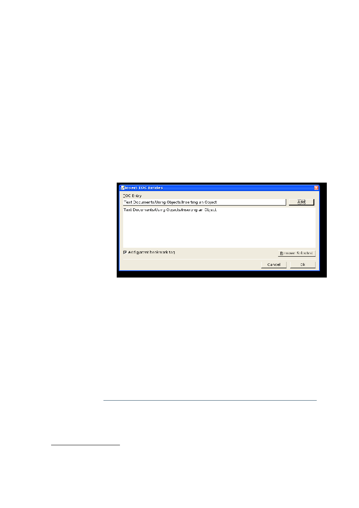
Modifying Index Entries In An Existing Bookmark Set
If you need to modify an existing index entry (for instance, to correct a typographical
error) delete and recreate this index entry as described previously.
Adding A New Bookmark Set With TOC Entries[14]
1. Place the cursor where you want the TOC entry to appear.
2. Remember that a TOC entry transforms to an anchor target in the help file.
Therefore, a TOC entry should always be placed directly above the text it
refers to.
TOC entries that refer to the complete help topic must be placed at the start of
the help topic.
3. Choose
Help Authoring - Bookmarks - Insert TOC Entries
.
Enter the TOC entry string in the
TOC Entry
text box and click
Add
to add it
to the list of TOC entries.
The TOC levels are separated using a slash
/
, for details see page 25.
You can remove TOC entries from the list by selecting them and clicking
Remove Selected
.
4. Select
Add parent bookmark tag
to create a new bookmark set of TOC
entries. If you want to add TOC entries to an existing bookmark set you need
to clear this box (see next procedure).
5. Click
Ok
.
Adding TOC Entries To An Existing Bookmark Set
You cannot mix different types of bookmarks (index entries, help ids, and TOC entries).
1. Place the cursor inside the bookmark set of TOC entries where you want to
add TOC entries.
14 These bookmarks are currently not evaluated when the help is compiled.
97

2. Choose
Help Authoring - Bookmarks - Insert TOC Entries
.
3. Compile the list of TOC entries that you want to add to the bookmark set, as
described previously.
4. Clear the
Add parent bookmark tag
box.
5. If the box is checked a new bookmark set with the specified TOC entries will
be created after the set at the cursor position.
6. Click
Ok
.
Determining A Help ID
The help ID inserted into the help file must either be the symbolic ID or an UNO
command (see "hid" Branch on page 26). You can determine the numerical ID or the
UNO command from the UI by setting an environmental variable
HELP_DEBUG
and
setting it to
TRUE
before you start OpenOffice.org.
If the variable is set you will see the help ID of an element together with its extended
tip whenever you rest the mouse over it (provided the extended tips are enabled). This
help ID can either be
·
a numerical ID, in this case it must be converted to the symbolic ID before
inserting it into the help file (see below)
·
an UNO command. This can be inserted into the help file without need for
conversion
To convert the numerical help
ID
into a symbolic help
ID
you need a matching table called
help_hid.lst
that can be found in the
helpers
directory of the
helpcontent2
module
You can either use this mapping table to look up a symbolic help
ID
yourself, or you can place it
into your local user/configuration directory of OpenOffice.org to allow the corresponding help
authoring macro convert it for you.
Adding A Help ID
1. Place the cursor where you want the Help ID to appear.
Remember that a Help ID transforms to an anchor target in the help file.
Therefore, the Help ID must be placed directly above the text it refers to and
above any extended tip that it corresponds to.
Help IDs that refer to the complete help topic must be placed at the beginning
of the help topic.
2. Choose
Help Authoring - Bookmarks - Insert Help ID
.
98
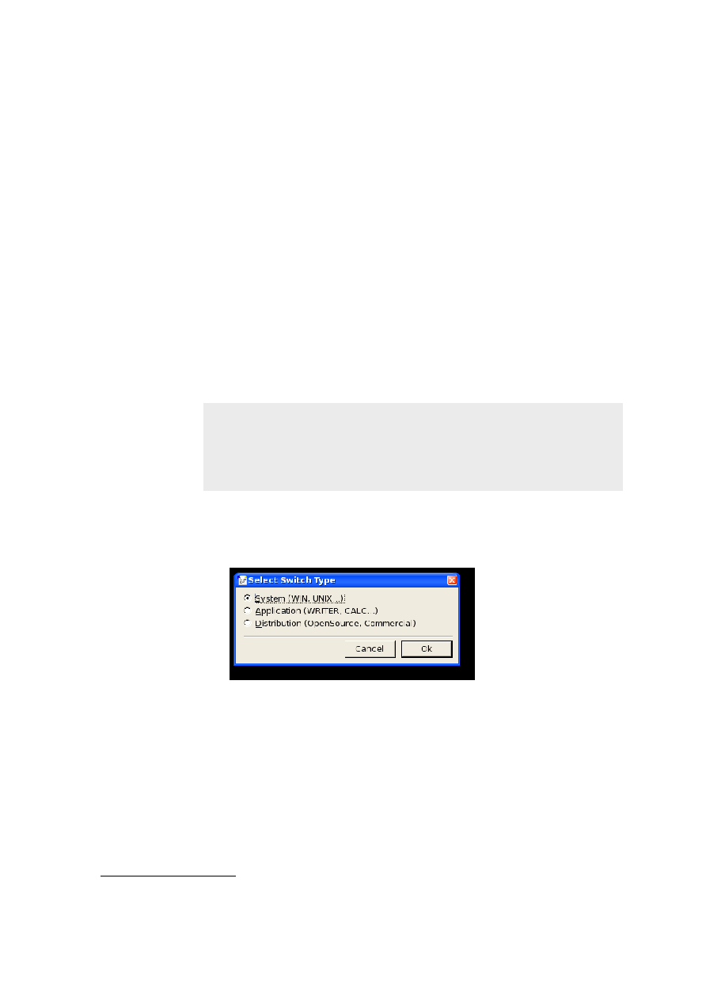
3. Insert the Help ID in the
Help ID
text box
4. If you only have the numerical help ID, click
Convert to Symbol
to convert
it to the symbolic Help ID. If this button is disabled you need to place a
help_hid.lst
file into the
user/configuration
directory of your
OpenOffice.org installation.
5. Click
Ok
.
Switching Content
Inline Switching
Inline switching uses conditional tags to switch parts of a paragraph for different
context situations. An inline switch consists of an outer
switchinline
element that
encloses one or more
caseinline
elements that define the conditions and optionally
one
defaultinline
element. The complete switch must be in one paragraph.
<switchinline select="switch_type">
<caseinline select="condition_1"></caseinline>
<caseinline select="condition_2"></caseinline>
...
<defaultinline></defaultinline>
</switchinline>
1. Place the cursor where you want the inline switch to start or select the text
passage that you want in the first condition.
2. Choose
Help Authoring - Switching - Open Switchinline
3. Select a switch type from the dialog. Currently, there are three switch types
available:
·
System switches are used to switch between different platforms
(Windows, Unix,...).
·
Application switches are used to switch between different applications
(Writer, Calc, Draw,...)
·
Distribution switches are used to switch between open source and
commercial distributions (OpenOffice.org, StarOffice,...) [15]
15 Not currently evaluated.
99
4. Click
Ok
5. Select the first condition (
caseinline
).
You can either select one of the pre-defined conditions from the list or specify
your own condition string.
6. Enter further conditions by selecting text and choosing
Help Authoring -
Switching - Insert Caseinline
for the corresponding switch type.
There is no text allowed (including spaces or line breaks) between a closing
and an opening tag inside an inline switch, e.g.
wrong:
</caseinline> <caseinline>
correct:
</caseinline><caseinline>
7. Optionally, insert a default condition by selecting text and choosing
Help
Authoring - Switching - Insert Defaultinline
.
8. Insert a closing
switchinline
element directly after the last
caseinline
element by choosing
Help Authoring - Switching - Close
Switchinline
.
If you have inserted a default condition as described above, the
switchinline
element will automatically be closed.
If you are not sure if you have actually created a valid switch choose
Help
Authoring - Validate
and you will be notified of any errors.
The pre-defined conditions are processed when the help is displayed. If you want to specify your
own condition string, you will have to ensure that the condition is processed when the help is
compiled (see page 19) and displayed. Usually, you will only use the pre-defined conditions.
Switching Complete Sections Or Paragraphs
Other than inline switches, this type of switches encloses one or more paragraphs
including graphics and tables. Similar to inline switches, they consist of an outer
switch
element that encloses one or more
case
elements that define the conditions
100
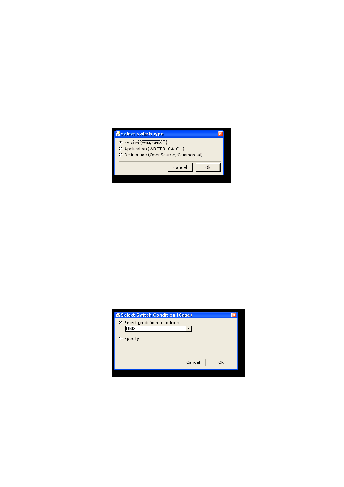
and optionally one
default
element. Each of those elements must be in a paragraph
of its own that is assigned the
hlp_aux_switch
style. The macros handle all that for
you.
1. Place the cursor where you want the switch to start.
If you are in a non-empty paragraph the switch will start before that
paragraph.
2. Choose
Help Authoring - Switching - Open Switch
3. Select a switch type from the dialog. Currently, there are three switch types
available:
·
System switches are used to switch between different platforms
(Windows, Unix,...).
·
Application switches are used to switch between different applications
(Writer, Calc, Draw,...)
·
Distribution switches are used to switch between open source and
commercial distributions (OpenOffice.org, StarOffice,...).
4. Select the first condition (
case
).
You can either select one of the pre-defined conditions from the list or specify
your own condition string.
5. Place the cursor where the condition ends.
If you are in a non-empty paragraph the condition will end after that
paragraph.
101

6. Choose
Help Authoring - Switching - Close Case
to close a
condition.
7. Now insert further conditions by
·
placing the cursor in the first paragraph of the condition
·
choosing
Help Authoring - Switching - Open Case
·
placing the cursor in the last paragraph of the condition
·
choosing
Help Authoring - Switching - Close Case
.
There are no paragraphs allowed between a closing and an opening tag
inside an switch, for example:
Wrong:
</case>
{Some other text, even an empty paragraph}
<case>
Correct:
</case>
<case>
8. You can optionally enter a default condition as follows:
·
place the cursor in the first paragraph of the default condition
·
choose
Help Authoring - Switching - Open Default
·
place the cursor in the last paragraph of the default condition
·
choose
Help Authoring - Switching - Close Default
.
9. Close the switch by placing the cursor directly behind the last
case
element
and choosing
Help Authoring - Switching - Close Switch
.
If you have inserted a default condition the switch will automatically be closed.
If you are not sure if you have actually created a valid switch, choose
Help
Authoring - Validate
and you will be notified of any errors.
The pre-defined conditions are processed when the help is displayed. If you want to specify your
own condition string you will have to ensure that the condition is processed when the help is
compiled (see page 19) and displayed. Usually, you will only use the pre-defined conditions.
102

Miscellaneous
Extended Tips
Extended tips come in two flavors, visible and hidden. Visible extended tips are part of
the normal help text while hidden extended tips are hidden from the normal help
content. Each extended tip is assigned a help ID to which it responds.
In the current implementation, the
hid
attribute of the extended tip elements
AVIS
and
AHID
are
not evaluated. The corresponding Help IDs must be placed as bookmarks in a paragraph before the
extended tip. The extended tip will be shown for all help IDs specified as bookmarks after the last
extended tip in the file.
1. Select the part of the paragraph that you want to use as extended tip.
An extended tip must not be spread over multiple paragraphs.
2. Choose
Help Authoring - Insert Visible Extended Tip
or
Help
Authoring - Insert Hidden Extended Tip
.
If you enclose text by a hidden extended tip this text portion will no longer be
visible in the help viewer.
3. Insert a help ID to be assigned to the extended tip. Note the comment about
help IDs above.
Sorting
Sorting is a new feature in OpenOffice.org Help. It can be used to sort sections based
on their content. This is useful, for example, for glossaries or other sorted lists that are
localized and would otherwise lose their correct sort order.
Note that sorting does not work for embedded sections.
1. Place the cursor before the first section to be sorted.
In the current implementation the
sort
element sorts the content of sections.
The sort element must not have any other child elements than
section
s.
2. Choose
Help Authoring - Sorting - Open Sort
3. Place the cursor after the last section to be sorted.
4. Choose
Help Authoring - Sorting - Close Sort
Validating
There is a basic validation procedure available that tests the help files before they are
exported from OpenOffice.org. To call it, choose
Help Authoring - Validate
.
Note that this procedure catches some of the most common and severe errors but it is
not fool-proof. It does not perform an XML validation on the file.
It is, however, recommended to validate a file before saving.
103

Troubleshooting
A Help File Cannot Be Opened
The reason is probably an invalid help
xhp
file. To verify this, open the help file in any
XML or text editor and check its validity. Fix any invalid syntax and reload the file.
If the XML file is valid and you cannot open any help file, see below.
A Help File Cannot Be Saved
The reason could be insufficient access rights to the directory or file you want to save
to. Change the access rights accordingly.
If you cannot save any help file, see below.
No Help File Can Be Opened Or Saved
The reason is probably a corrupted XSLT export/import filter. Occasionally, installing
the help authoring filter produces an error in the xsl files. To repair this proceed as
follows:
If you are familiar with XSLT
1. Change to the
user/xslt/Help
directory of your OpenOffice.org installation.
2. Open the import and/or export xsl file.
3. Got to the end of the file and check if there is any obvious duplicated content.
Occasionally, the last lines of the stylesheet get duplicated. There must only
be one single
</xsl:stylesheet>
tag in the file.
If you are unfamiliar with XSLT
on page 76) and unpack it to a temporary directory.
2. Copy the
*.xsl
files from the Help subdirectory of the files that you just
unpacked to the
user/xslt/Help
directory of your OpenOffice.org installation
overwriting the existing files.
Paragraph Content Has Vanished On Reload
The reason is probably the use of a wrong paragraph format. Remember, that for
paragraphs with content you must use one of the predefined
hlp_*
paragraph styles.
104

5 Appendix
Glossary
Application
A OpenOffice.org "module" for different document types. There are the following
applications: Writer for text documents, Calc for spreadsheets, Impress for
presentations, Draw for drawings, Math for formulas, Basic for Macros.
Active Help
- A synonym for an extended tip.
Anchor
A location inside a help file which serves as a bookmark to which the help viewer
jumps, displaying the help for a certain context.
Attribute
Component of an XML element carrying information that specifies the element in
greater detail, for example, the
role
attribute in the
paragraph
element.
Bookmark
1. A help function that allows you to set user-defined bookmarks to help topics to
make them easier to access. 2. An element of a help XML file that is used to define
anchor points for help ids or keywords.
Build List
The file
build.lst
controls the build process of a module by defining module
directories to be built and application dependencies between them.
Cascading Style Sheet
The style sheet used to define the layout of a help page displayed in
the help viewer.
Context-Sensitive Help
When called from within the OpenOffice.org application, the help
receives information about the user interface context,such as active dialog, or selected
element. This information is used by the help to display information related to that
context, provided this relation is defined in the help files. Help IDs are used to define this
relation.
CVS
Concurrent Versioning System, a widespread version control system that is also used by
OpenOffice.org. See
tools.openoffice.org
.
CVS Module
A part of the CVS that contains code for a section of the OpenOffice.org
product.
Dependency Files
When a module is re-compiled, only changed files and files that depend
on them need to be compiled again. Dependency files describe these dependencies.
These files are used by the
make
utility.
DTD
Document Type Definition, a file that describes the document syntax for an XML
document. The DTD is needed to validate an XML file.
Embedding
In OpenOffice.org help files can contain references to parts of other help files
that are dynamically inserted when the help is displayed.
105

Extended Tip
Yellow "bubble" on the application user interface that contains information
about the element under the mouse cursor. Extended tips appear when the mouse
cursor rests over a user interface element. In OpenOffice.org 1.1.x they are
enabled/disabled using
Help Extended Tips
.
Full-Text Search
A help function that allows you to search through the text of the set of help
files. The function uses a search index that is created when the help files are compiled
and built. Help files can be excluded from this search index using the
exclude
value in
the
indexer
attribute of the
topic
element.
Help Authoring Template
The help authoring filter contains XSLT import/export filters and a
help authoring template that specifies the layout of the help documents inside
OpenOffice.org.
Help Compiler
A program that compiles the help files into an intermediate "object" format
that is used by the help linker to assemble the final help files that are installed with
OpenOffice.org.
Help Content Provider
A service inside OpenOffice.org that provides the Help to the help
viewer.
Help IDs
Numerical or symbolic identifiers that are defined for user interface elements in the
application code. Help IDs can be used to identify the context in which the help is called
and to define a relation between an application context and the help topic that is
displayed.
Help Module
Each OpenOffice.org application has a help module associated: Writer, Calc,
Draw, Impress, Math, Basic.
Help Section
A subdirectory of
helpcontent2/source/text
. Each help module contains
the help files of one or more help sections.
Help Topic
The contents of a help file. Usually, a help topic describes one task or a logical
group of reference information.
Help Viewer
- OpenOffice.org component that displays the help files and provides help
functionality.
Icon
An image that is taken from the resource repository of the application itself. Icons are
stored in different CVS modules and after installation are available in the
images.zip
file.
Image
Graphical content that is specific to the help files. All images are stored in the
helpimg
directory of the
res
CVS module and after installation are available in the
images.zip
file.
Block Image
An image that is on a paragraph of its own. Block images can have captions.
Inline Image
An image that is part of another paragraph and surrounded by text content.
Inline images
cannot
have captions.
Import/Export Filter
XSLT files that control the conversion of the help files from
xhp
to
OpenOffice.org and vice versa. Using a template they also control the appearance of the
files in OpenOffice.org.
Index of Keywords
A two-level list of keywords associated with help topics. Keywords are
explicitly defined in the help files.
Instructional Information
Information in OpenOffice.org help that provides instructions on
how to fulfill tasks.
makefile
File that describes the processes for "making" (compiling/linking) files inside a
106

directory. Used by the
make
utility.
Meta Data
Help file data that describe the help file, like file name, topic title, creation date.
These are stored inside the
meta
element of the help file.
Nested Sections
Sections containing other subsections. Nested sections are supported in
the help files.
Nested Tables
Tables containing other tables. Nested tables are unsupported in the help
files.
Node
A node is a part of the help content tree that is used to group help topics. See Contents
Output Tree
A directory tree (aka solver) that takes all files that are produced on "making"
(compiling/linking) source files. See
tools.openoffice.org
.
Platform
Operating System, such as Linux, Solaris x86, Solaris SPARC, or Windows.
Reference Information
Information in OpenOffice.org help that explains the effect or function
of a user interface element.
Role
In the help files that type of a paragraph is specified by its
role
attribute.
Section Delimiter Line
A section inside OpenOffice.org is delimited by two gray lines.
Solver
see Output Tree.
Style Sheet
A document containing commands for transforming an XML file (transformation
style sheet) or for displaying an XML or HTML file (cascading style sheet).
Symbolic Name
The help IDs used in the applications can be transformed to symbolic
names that are defined in the list of help ids,
hid.lst
. They are symbolic identifiers that
give the number a somewhat descriptive name.
Tool Tip
A synonym for an extended tip.
Topic ID
Each help file (aka topic) has a unique topic
ID
to be identified. It usually is created
from the help file name.
Transformation Style Sheet
The style sheet used for transformation.
Transformation
In this context, the process of converting the XML format of the help
document. The major transformation takes place when the help is displayed. The
transformation style sheet
main_transform.xsl
is used for that.
UNO Command Name
One type of help ID that is used in the applications. Other than
"normal" help ids which are numerical, these command names are symbolic identifiers
and don't need to be converted.
Validation
The process of checking the validity of a help file. See Validating on page 103.
107

XML Help Document Type Definition
<!--
Version 03-Feb-2006
added optional localize attribute to images
-->
<!ELEMENT ahelp (#PCDATA | embedvar | br | comment | emph | item | link |
switchinline | variable)*>
<!ATTLIST ahelp
hid CDATA #REQUIRED
visibility (hidden | visible) #IMPLIED
>
<!ELEMENT alt (#PCDATA)>
<!ATTLIST alt
xml-lang CDATA #REQUIRED
id CDATA #REQUIRED
localize CDATA #IMPLIED
>
<!ELEMENT body (section | paragraph | table | comment | bookmark | switch |
embed | list | sort)*>
<!ELEMENT bookmark (bookmark_value)*>
<!ATTLIST bookmark
branch CDATA #REQUIRED
xml-lang CDATA #REQUIRED
id CDATA #REQUIRED
localize CDATA #IMPLIED
>
<!ELEMENT bookmark_value (#PCDATA | embedvar)*>
<!ELEMENT br EMPTY>
<!ELEMENT caption (#PCDATA | embedvar | br | emph | item | link | switchinline |
variable)*>
<!ATTLIST caption
xml-lang CDATA #REQUIRED
id CDATA #REQUIRED
localize CDATA #IMPLIED
>
<!ELEMENT case (paragraph | table | comment | bookmark | embed | link | list |
switch | section | sort)*>
<!ATTLIST case
select CDATA #REQUIRED
>
<!ELEMENT caseinline (#PCDATA | image | embedvar | br | emph | item | link |
switchinline | variable | ahelp | object)*>
<!ATTLIST caseinline
select CDATA #REQUIRED
>
<!ELEMENT comment (#PCDATA)>
<!ELEMENT created (#PCDATA)>
<!ATTLIST created
date CDATA #REQUIRED
>
<!ELEMENT default (paragraph | table | comment | bookmark | embed | link | list
| switch | section | sort)*>
<!ELEMENT defaultinline (#PCDATA | image | embedvar | br | emph | item | link |
switchinline | variable | ahelp | object)*>
<!ELEMENT embed EMPTY>
<!ATTLIST embed
href CDATA #REQUIRED
role CDATA #IMPLIED
level CDATA #IMPLIED
>
<!ELEMENT embedvar EMPTY>
<!ATTLIST embedvar
href CDATA #REQUIRED
108

markup (keep | ignore) #IMPLIED
>
<!ELEMENT emph (#PCDATA | item | comment | help-id-missing)*>
<!ELEMENT filename (#PCDATA)>
<!ELEMENT helpdocument (meta, body)>
<!ATTLIST helpdocument
version CDATA #REQUIRED
>
<!ELEMENT history (created, lastedited)>
<!ELEMENT image (caption* | alt+)?>
<!ATTLIST image
src CDATA #REQUIRED
width CDATA #IMPLIED
height CDATA #IMPLIED
id CDATA #REQUIRED
localize CDATA #IMPLIED
>
<!ELEMENT item (#PCDATA)>
<!ATTLIST item
type CDATA #REQUIRED
>
<!ELEMENT lastedited (#PCDATA)>
<!ATTLIST lastedited
date CDATA #REQUIRED
>
<!ELEMENT link (#PCDATA | embedvar | emph | item | variable | switchinline)*>
<!ATTLIST link
href CDATA #REQUIRED
name CDATA #IMPLIED
type CDATA #IMPLIED
target CDATA #IMPLIED
>
<!ELEMENT list (listitem | (comment)*)+>
<!ATTLIST list
type CDATA #REQUIRED
startwith CDATA #IMPLIED
format (1 | i | I | a | A) #IMPLIED
bullet (disc | circle | square) #IMPLIED
sorted (asc | desc) #IMPLIED
>
<!ELEMENT listitem (comment | section | paragraph | table | switch | embed |
bookmark)*>
<!ATTLIST listitem
format (1 | i | I | a | A) #IMPLIED
bullet (disc | circle | square) #IMPLIED
class CDATA #IMPLIED
>
<!ELEMENT meta (topic, history?)>
<!ELEMENT object EMPTY>
<!ATTLIST object
type CDATA #REQUIRED
id CDATA #REQUIRED
data CDATA #REQUIRED
height CDATA #IMPLIED
width CDATA #IMPLIED
>
<!ELEMENT paragraph (#PCDATA | image | comment | embedvar | br | emph | item |
link | switchinline | variable | ahelp | object | bookmark | help-id-missing)*>
<!ATTLIST paragraph
role CDATA #REQUIRED
level CDATA #IMPLIED
id CDATA #REQUIRED
l10n CDATA #IMPLIED
xml-lang CDATA #REQUIRED
oldref CDATA #IMPLIED
localize CDATA #IMPLIED
>
<!ELEMENT section (section | paragraph | table | list | comment | bookmark |
109

embed | switch | sort )*>
<!ATTLIST section
id CDATA #REQUIRED
>
<!ELEMENT sort (section+)>
<!ATTLIST sort
order (asc | desc) #IMPLIED
>
<!ELEMENT switch ((case | comment)* | default?)*>
<!ATTLIST switch
select (sys | appl | distrib | target | lang | ver) #REQUIRED
>
<!ELEMENT switchinline ((caseinline)+, (defaultinline?)?)>
<!ATTLIST switchinline
select (sys | appl | distrib | target | ver | lang) #REQUIRED
>
<!ELEMENT table (caption*, tablerow+)>
<!ATTLIST table
name CDATA #IMPLIED
width CDATA #IMPLIED
height CDATA #IMPLIED
unit CDATA #IMPLIED
class CDATA #IMPLIED
id CDATA #REQUIRED
>
<!ELEMENT tablecell (section | paragraph | comment | embed | bookmark | image |
list)*>
<!ATTLIST tablecell
colspan CDATA #IMPLIED
rowspan CDATA #IMPLIED
width CDATA #IMPLIED
class CDATA #IMPLIED
unit CDATA #IMPLIED
>
<!ELEMENT tablerow (tablecell+)>
<!ATTLIST tablerow
height CDATA #IMPLIED
class CDATA #IMPLIED
unit CDATA #IMPLIED
>
<!ELEMENT title (#PCDATA)>
<!ATTLIST title
xml-lang CDATA #REQUIRED
id CDATA #REQUIRED
localize CDATA #IMPLIED
>
<!ELEMENT topic (title+, filename, bookmark*)>
<!ATTLIST topic
id CDATA #REQUIRED
indexer (exclude | include) #IMPLIED
status (DRAFT | FINAL | PUBLISH | STALLED | DEPRECATED) #IMPLIED
>
<!ELEMENT variable (#PCDATA | ahelp | embedvar | br | emph | item | link |
variable | image | object | switchinline)*>
<!ATTLIST variable
id CDATA #REQUIRED
visibility (hidden | visible) #IMPLIED
>
<!ELEMENT help-id-missing EMPTY>
110
Document Outline